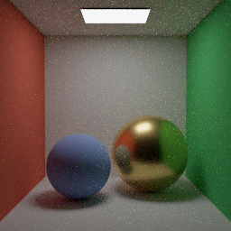
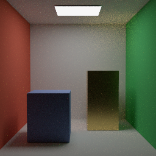

Designing an MIT game engine for rich geometry, many lights and robust ray tracing.
UE5.8 / UE6Vulkan / DX12RT / PT / DLSSMIT core
Summary and recommended direction
Build an MIT engine around NoGraphicsAPI’s data model, prove hardware ray tracing and reconstruction early, and grow scene detail through streaming. UE5.8 is a visual target; UE6 is a roadmap to track.
Recommendation · architecture with an initial tested foundation
Start with a Windows Vulkan vertical slice using a pinned NoGraphicsAPI fork. Add narrow RT and native SDK interoperability extensions. Keep original Basix renderer code under MIT. Offer NVIDIA SDK adapters as optional components with separate terms and a working non-DLSS path.
This is feasible as a focused renderer and game framework. Matching UE’s complete engine, tools and content ecosystem is a much larger effort. NoGraphicsAPI reduces binding/API complexity; it does not supply scene streaming, a material system, ray tracing, denoising or an editor. The first milestone must test the missing RT/SDK seam before major engine investment.
Evidence boundary: public documentation, license texts and the pinned NoGraphicsAPI source were inspected. An initial NoGraphicsAPI/Vulkan hardware-ray-query experiment and CPU cage math are implemented and locally tested. No performance benchmark or UE visual parity has been demonstrated. Budgets are proposals; implementation status is recorded separately below.
New research: prioritize LOD/history correspondence before extra geometry density, then test compatibility-guided reuse and adaptive ray budgets. Procedural vegetation, path guiding and neural texture/cache work stay separate optional branches. Read the evaluated forum leads.
SDK milestone completed: actual optional DLSS SR now evaluates on the NoGraphicsAPI-owned Vulkan device, followed by correct engine readback. This static interop gate uses an explicit descriptor-state workaround; temporal quality, RR and FG remain open. See results and limits.
Measured implementation: material conformance and a CPU reference PT now pass their scoped checks. M2 remains partial while broader GPU transport, import and motion acceptance are open.
GPU transport progress: the ordinary Vulkan progressive scene gate passes. The legacy NDF control retains 18 paired grazing failures; a separate visible-GGX proposal and its independent acceptance are described below. M2 remains partial. Actual image, results and retained failure.
Visible-GGX update: the distinct sampled-state proposal passes its canonical sampling and progressive-scene gates. The original NDF failure is preserved, and remaining scene/temporal gates stay open. Numerical contract, independent physics checks and limits.
Ray-origin update: the opt-in triangle error-box candidate passes its selected scoped numerical gate. The working origin is removed before FP32 upload; actual converted separations remain part of the evidence. Legacy offsets remain the renderer default. Fixtures, error policy and remaining limits.
Transform uncertainty:the arithmetic/range gate passes its selected bounded acceptance and separates exact-real representation enclosure from conditional FP32 and hardware policies. No universal hardware error bound is claimed.
New NVIDIA whitepapers evaluated: DX12 preview maturity corrected; cluster templates, partitioned updates and performance gates added without promoting implementation status.
Research map and decision gates
ID / priority
Question and dependency
Evaluation and stopping condition
Q1 · High
Can the core stay MIT? Independent gate.
Inspect exact code licenses, runtime submodules and SDK exceptions. Stop when core versus optional distribution boundaries are explicit; shipping clearance stays open.
Q2 · High
Can NoGraphicsAPI host hardware RT and DLSS? Depends Q1.
Inspect public API and shader ABI. Stop research at a concrete extension plan; capability, native-object and state restoration spikes must still run.
Q3 · High
What yields UE-like detail? Depends Q2.
Separate geometry, materials, lighting, reconstruction and residency. Stop at a staged architecture with measurable scene tests.
Q4 · High
MegaLights, RTXDI or full PT? Depends Q2.
Compare direct-light scope, sampling bias, temporal behavior and guides. Stop at one selectable DI strategy and two rendering modes.
Q5 · Medium
Which DX updates can ship? Depends Q2.
Use official SDK release tables and explicit draft status. Stop when retail/preview/draft are separated and fallbacks identified.
Q6 · Medium
What does PETAFAB demonstrate? Independent evidence.
Use author’s technology description and Steam status. Stop at supported transferable principles; do not infer undisclosed BVH, SDK or transport internals.
Scope expanded during research to include MegaLights and PETAFAB at the user’s request. Open implementation questions are retained in the roadmap and evidence library. Primary sources outrank third-party summaries; mutable pages need rechecking before dependency updates.
Q7 · High: can cages preserve acceptable deformation and ray correctness while reducing full-frame cost? Compare independent deformed triangles, shared-face/grazing cases and ordinary BLAS; stop research at separate fast/reference variants and measurable adoption gates. Q8 · High: which geometry ideas are complementary? Separate compression, LOD, AS organization and deformation; require independently queried capabilities.
Q9 · High: which discussion leads improve Basix without invalidating temporal reuse or the MIT boundary? Prioritize surface correspondence, sampling quality and total memory. Stop at independently testable adoption gates; retain abstract-only and authenticated-access gaps.
Q10 · Whitepaper refresh: first resolve preview maturity; then select geometry and performance ideas that change Basix decisions. Stop when prerequisites, limitations and independent acceptance gates are explicit. No driver installation or renderer experiment is part of this research update.
UE5.8 and UE6: define the benchmark
Epic released UE5.8 in June 2026. Its rendering overview makes MegaLights production-ready and introduces lower-cost Lumen Lite GI. Geometry/worldbuilding features have separate maturity labels; do not treat everything in the release as production-ready. Epic targets UE6 Early Access at the end of 2027 and full release 12–18 months afterward. That is a target, and the development stream is not an alpha.
Cluster hierarchy, LOD error bounds, GPU culling and geometry streaming; maintain a compatible RT representation.
Conventional meshlets and explicit LODs before virtualized microgeometry.
Lumen-like GI
Dynamic bounce lighting with stable temporal reconstruction and disocclusion recovery.
Probe/cached diffuse GI for hybrid mode; independent full PT reference.
MegaLights
Stochastic many-light direct illumination with soft visibility.
Analytic area lights plus emissive triangle sampling; inspect selected samples and visibility.
Material richness
Consistent energy-aware BSDF evaluation and texture LOD in raster and ray paths.
Metallic/roughness, normal maps, emissive and alpha test; later layered materials and transmission.
Large worlds
Camera-relative coordinates, cell streaming, dependency-aware asset cooking and residency.
One dense district or indoor/outdoor scene with bounded memory.
Development speed
Deterministic asset builds, shader cache, crash diagnostics and hot reload.
Scene inspector and reproducible capture runner before a general editor.
Reasoning: “UE-like” must be converted into scene-level acceptance criteria. A close-up scanned prop, an emissive city interior and a forest stress very different systems. High triangle count alone cannot establish parity. Use self-created or separately licensed assets, a fixed camera and material/light calibration; include a path-traced reference in comparisons.
NoGraphicsAPI: adopt the model, expose the gaps
The pinned upstream implementation uses C++20 and shared Slang shaders on Vulkan and Metal. It is MIT, with separate third-party notices. Vulkan 1.4 alone is insufficient: the README requires descriptor heaps, mesh shaders and untyped shader pointers. Its compatibility table is a dated report, not a promise about every current driver. Pin the toolchain and enumerate device features on startup.
Source inspection of NoGraphicsAPI.hpp at ffd9f2ab… finds draw/compute/mesh, heap, queue and synchronization APIs, but no public BLAS/TLAS construction, ray pipeline dispatch or native-handle SDK interface. Hardware triangle RT therefore requires implementation work. Compute dispatch can host software tracing, but does not by itself expose hardware traversal.
Keep the pointer-root approach, application-owned allocation and indexed texture heaps. Protect root addresses and descriptor slots until GPU completion. Roots use a shared constant-buffer ABI, while pointed-to data uses C POD layout; enforce C++ offsets and compiled shader reflection in CI. Upstream synchronization omits per-resource lists, but Basix still needs resource knowledge for lifetime, aliasing, SDK state contracts and scheduling.
BLAS/TLAS size queries, scratch allocation, build/update/compact, instance masks, AABB geometry, and build-to-trace synchronization. Trace a static triangle and a moving instance first.
NativeInterop scope
Borrow the owning device, queues, command list/buffer and native images. Define states/layouts on entry and exit, queue ownership and SDK completion. Restore heap/pipeline bindings after SDK evaluation.
ShaderCapabilities
Feature-selected shader variants for ray query and ray pipelines; explicit compiler and target versions. Compile probes must use the actual pinned Slang/DXC versions.
ResourceRegistry
Track native object metadata behind GPU allocations/texture handles, including usage, aliasing, views, owner queue and retire fence.
Failure handling
Unsupported feature diagnostics, device loss, SDK startup failure and fallback reconstruction must produce a usable error or supported rendering mode.
Maintain these as a small, tested fork or upstreamable extension rather than scattering native calls throughout the renderer. Native SDK use must share the actual graphics device and resource ownership; introducing an unrelated second device is not a transparent shortcut.
Current implementation responsibilities
NoGraphicsAPI is the Vulkan device/resource/submission foundation of the current renderer. Basix adds native Vulkan adapters for acceleration structures, ray-query shader pipelines and optional Streamline interoperation. The current PT and guide path is a mixed implementation; no percentage of engine work or claim that every GPU allocation/dispatch passes through NoGraphicsAPI is supported.
Responsibility
Current owner / implementation
Device and submission ownership
NoGraphicsAPI creates the Vulkan device, command pools and timeline semaphores; Basix owns the session/lifetime policy and uses its submission/completion API.
General shader data and textures
NoGraphicsAPI heaps, textures and texture/sampler descriptor heaps hold the pointer-root data and native image resources used by the adapters.
BLAS / TLAS / build scratch
Basix native Vulkan acceleration-structure adapter creates these objects and native buffers/memory, including vkAllocateMemory. These allocations are not all NoGraphicsAPI heap allocations.
PT and guide compute pipelines
Basix NativePipeline creates Vulkan pipeline/layout/AS descriptor bindings, records vkCmdBindPipeline/vkCmdBindDescriptorSets and actual vkCmdDispatch on the borrowed native command buffer. NoGraphicsAPI owns that command buffer’s pool/submission lifetime.
Upload, readback and fallback compute
NoGraphicsAPI compute/resource operations are used for these stages; this does not make the separate native RT/guide dispatch its compute-pipeline API.
Optional DLSS
Original Basix adapters expose the same device/native Vulkan image and command metadata to Streamline. NVIDIA supplies the separately licensed SDK implementation/runtime.
Rendering algorithms and checks
Original Basix materials, PT sampling, world metadata, authored orientation, error policies, guide math and independent acceptance tools. NoGraphicsAPI supplies backend primitives rather than these algorithms.
Aaltonen’s technology page explicitly links PETAFAB to a custom NoGraphicsAPI engine, distance-field ray tracing, mesh shaders and Clayfield-derived matter/fluid simulation. It describes fully destructible SDF environments and large bot crowds. The author reports native 4K/240 FPS on RTX 4080 and other device figures; those results lack a reproduced test protocol here and are not comparable to a general triangle-based path tracer. Steam lists November 6, 2026, so the game is still upcoming at this research date.
Choose the world representation around gameplay. An SDF world can make boolean destruction and ray marching natural, while mesh shaders serve other geometry workloads. A specialized representation and bounded art direction can outperform a general renderer without implying equal coverage of every material and scene type.
For Basix, retain triangle geometry as the general asset path. Prototype SDF volumes only if destruction is a game requirement. A hybrid could render static/animated meshes conventionally and intersect destructible SDF chunks through procedural RT primitives, with explicit bounds and conservative distance steps. This is a proposed experiment, not a disclosed PETAFAB implementation.
Unanswered implementation questions
The examined public pages do not establish its hardware RT acceleration strategy, full light-transport estimator, denoiser, DLSS integration, source-code license, SDF resolution/streaming or worst-case destruction cost. Do not infer those from “ray tracing” or from footage. SDF ray marching and DXR triangle traversal are different mechanisms; neither phrase proves full Monte Carlo path tracing.
MegaLights and RTXDI: one direct-lighting problem
Epic describes MegaLights as stochastic direct lighting: a fixed ray/sample budget targets influential lights, followed by reconstruction. More lighting complexity can reduce quality at the same budget. Screen-space traces supplement the simplified RT scene. BVH mismatch, visibility changes and denoiser behavior remain important failure modes. UE5.8 includes fog and translucency support, but direct illumination still does not solve the entire light-transport problem.
RTXDI supplies reservoir-based DI/GI/PT building blocks. Its 3.1 changes include RR sample integration and PT decorrelation, showing that temporal resampling and neural reconstruction interact. The original ReSTIR work derives sample reuse estimators; unbiased and biased variants have different tradeoffs. MegaLights and RTXDI address overlapping product goals, but are not interchangeable algorithm names.
Accelerated reference for resampling and high-end experiments.
Separate SDK terms, changing layouts, bridge functions and explicit ownership of reservoir resources.
UE MegaLights reference
Visual/authoring benchmark for many soft-shadowed lights.
Do not import UE implementation code into the MIT core or assume full PT.
Full PT mode
A different integrator using shared materials and scene data.
Avoid counting the same direct contribution in both the integrator and a separate DI pass.
Proposed many-light implementation
Create a stable light table for analytic lights and emissive triangles. Generate importance candidates, retain weighted samples, reproject prior reservoirs only when identity, depth, normal and material remain valid, then perform optional spatial reuse and visibility evaluation. Keep selection/PDF conventions documented and test against brute-force light summation. Treat visibility reuse and bias correction as explicit settings, not invisible quality shortcuts.
Expose views for selected light IDs, weights, reservoir age, rejected history, shadow rays, lighting variance and raster-versus-RT geometry. Include a sudden light toggle, fast-moving occluder, tiny bright emitter and disocclusion test. Start with opaque surfaces; add alpha-tested foliage, volumes and transmission in separate measured steps.
Hybrid: stochastic DI + diffuse GI / reflectionsPT: shared BSDF + light sampling + multi-bounce transport
Guides → fallback denoising or optional DLSS RR → post → UI → presentation
Proposed data flow. Raster and ray paths share asset identity and material semantics; reconstruction owns its history.
Modules: Platform (window/input/files), Core (jobs/allocators/diagnostics), Assets (import/cook/cache), World (entities/transforms/animation/streaming), Render (GPU scene/materials/frame graph), GPU (NoGraphicsAPI plus extensions), Integrations (optional SDK adapters), and Tools (inspector/capture/profiling). Keep gameplay and physics outside rendering dependencies. Choose audio, physics and asset libraries only after separate license and integration checks.
Frame ownership and scheduling
Freeze a render snapshot of scene transforms and material/light tables. Upload changes into fence-protected ranges. Schedule animation/deformation, BLAS updates and TLAS construction before rays consume them. Cull visibility with GPU work, render stable primary-surface guides, then run the selected lighting integrator. Supply the reconstruction path with an explicit camera/history epoch. Retire descriptors, memory and acceleration structures after their last consumer completes.
A render graph should declare reads/writes and external SDK boundaries even if the low-level API exposes global barriers. The graph can enforce ordering, transient resource reuse and memory peaks. Cross-queue overlap is a measured optimization: simultaneous AS construction, streaming and lighting may contend for bandwidth rather than shorten the frame.
D3D12 decision
A native D3D12 backend is strategically useful for PIX, DXR and Linear Algebra experiments, but it is a second implementation project. SM6.6 descriptor indexing provides bindless resources, not arbitrary shader pointer traversal. Use a logical GpuRef abstraction: Vulkan may encode a device pointer; D3D12 can encode a buffer/arena index plus byte offset behind typed access helpers. Shared structures must not silently reinterpret one encoding as the other.
Build a compile-and-dispatch ABI spike before promising one source path across DXIL/SPIR-V/Metal. Backend-specific access helpers may be necessary. If D3D12 must ship first, accept this abstraction work immediately; otherwise prove Vulkan RT/DLSS first and preserve backend-independent renderer interfaces. Do not implement a broad generic RHI before proving these two risky seams.
Current backend boundary: NoGraphicsAPI owns the Vulkan device/resource/submission foundation; Basix native Vulkan adapters perform AS allocation/builds, PT/guide pipeline binding and dispatch, and optional SDK interoperation. See the responsibility table for the implemented split.
RT and PT quality: establish correctness first
RTXPT’s main sample uses unified path tracing; its separate IntroSample demonstrates incremental hybrid rendering. It is useful as a reference for architecture, guides and validation, but its known issues distinguish D3D12 from Vulkan and include vendor-specific failures. Its framework and SDK dependency tree should not be copied wholesale into an MIT engine.
Implement one BSDF library for raster evaluation, direct-light sampling and ray hits. Begin with diffuse and GGX reflection, metallic/roughness textures, emissive surfaces, normal maps and double-sided rules. Use consistent units and exposure. Add a basic progressive reference integrator with next-event estimation, multiple importance sampling and Russian roulette; retain an accumulation mode without temporal reuse, neural reconstruction or radiance caches.
Validate energy conservation, PDF normalization, sampling versus evaluation, and furnace behavior. Test transmission, volumes and hair later with their own reference scenes. Use scale-aware ray origin offsets, robust intersection handling and ray-cone or differential-based texture LOD. Primary visibility must agree with the RT scene on alpha testing, LOD, deformation and material identity.
Geometry is a separate budget
Static BLAS can be built once and compacted; deforming meshes require update or rebuild policies chosen by quality and traversal cost. Refit is not always faster overall. Track scratch peaks, TLAS instance counts, animation cost and allocation churn. Simplified RT proxies can make shadows/reflections diverge from raster detail. Visualize that divergence directly and budget higher RT detail for hero objects and mirrors.
Establish a low-sample PT baseline, then add temporal denoising and optional RR. Introduce reservoir sampling, caches and SER one at a time against reference captures. Any radiance cache needs invalidation for moving geometry and lighting. Prefer predictable quality degradation and a hybrid fallback over assuming full PT will meet every device’s frame budget.
DLSS: plan the resource contract now
Use an original Basix reconstruction interface with backend-specific adapters. Streamline’s framework is MIT with exceptions, while DLSS remains separately licensed. Initialize the integration at the required point in device startup; query each feature for the selected adapter/API. Native resource tagging, layouts/states, command ownership and completion are first-class requirements for the NoGraphicsAPI extension.
The pinned RR guide requires noisy color and material/geometric guides: diffuse/specular albedo, normals/roughness, motion, depth, and reflection motion or hit distance. Exact formats, packing and coordinate flags belong to the pinned guide. Provide dense object/camera motion, stable jitter and reset on camera cuts, resolution changes and scene epochs. RR is a reconstruction path; do not blindly add it after a separate SR invocation or pre-denoise away the signal it expects.
Original temporal/spatial denoising and antialiasing; same guide semantics.
Required baseline on unsupported adapters and without NVIDIA binaries.
DLSS Super Resolution
Color, depth, motion, exposure/jitter and reset conventions. Integrate and validate before RR.
Keep native/fallback rendering selectable.
DLSS Ray Reconstruction
Noisy transport plus material/geometric guides. Coordinate with sampling decorrelation and history.
Switch reconstruction ownership cleanly; clear incompatible history.
Frame Generation / MFG
Later integration with supported hardware, presentation/latency contracts and UI handling.
Measure simulation/render latency and base rendered FPS independently of displayed generated frames.
NVIDIA’s 2026 announcement describes DLSS 4.5 RR model updates. Model availability through NVIDIA app overrides, an SDK release, and validated engine support are separate facts. Pin deployed binaries and record model/preset/driver during captures; do not equate a marketing generation with a universal feature set.
Required experiments: moving reflections, thin geometry, particles, transparent glass, animated textures, disocclusion, sudden exposure changes, resizing and feature toggling. Include overlays of depth and motion vectors. A stable screenshot alone is not evidence of reconstruction quality.
Implemented SDK boundary: use a stable custom-engine ProjectID GUID and engine version, signed compatible Streamline SR modules, and explicit pre-device Vulkan requirements. Query support and provide color/depth/motion/output image state, then test evaluation and engine binding restoration. The documented ProjectID path must be tried before treating a missing NVIDIA-issued application ID as a blocker. The initial static SR evaluation has now passed; the broader renderer integration remains partial.
Actual SR interoperability · passed on the named local GPU
The optional Windows target loads a signed, hash-pinned Streamline2.14.16 runtime from a separate local directory. Basix supplies a stable custom-engine ProjectID, pre-device extension/feature requirements, explicit color/depth/motion/exposure/output metadata, frame tokens and complete camera constants. No NVIDIA runtime is included in the repository.
Three real SR frames upscale427×240 to640×360. Before evaluation,922,320 RGB components match an independent constant-radiance input oracle. After evaluation,2,073,600 RGB components match an independent native FP16 image copy exactly; their expected-radiance RMSE is0.000347785 and maximum error0.00146484. Output images and both readback buffers are reset to sentinels/NaNs each frame. The no-evaluation control fails the oracle.
Without a conventional descriptor-set handoff, the tested SDK returns success but writes black SR output with descriptor heaps active. Basix reproduces issue109 and binds an empty conventional set immediately before SR evaluation. It then rebinds both NoGraphicsAPI resource/sampler heaps, the pipeline and pointer-root data. This is a measured SR workaround, not a claim that FG works or the upstream issue is fixed.
The full-process validation harness also caught initialization requirements outside the SDK’s returned SR list: core1.3 privateData and core1.4 pushDescriptor. Basix queries support before enabling them. It normalizes obsolete VK_EXT_buffer_device_address to the requested core1.2/KHR path, rather than enabling a forbidden EXT/core combination.
Eight cases cover actual evaluation, omitted-evaluation rejection, post-evaluation cleanup, unsupported extensions, relative runtime rejection, invalid signatures, Release validation refusal and the no-handoff control. Feature release and SDK shutdown must succeed before a passing receipt. Vulkan warning/error logs are clean; three SDK warnings concern unavailable automatic state-tracking hooks and are explicitly reviewed because Basix restores its own state.
Limits: one Windows/RTX4090/NVIDIA617.42 configuration; constant radiance, zero motion and jitter, fixed resolution, no detail or temporal-quality acceptance. SDK resize, camera cuts, dynamic motion, fallback toggles, RR, FG and actual device loss remain unverified. The SDK still invokes its NGX bootstrap updater despite disabled OTA options; this is not an offline-runtime claim. Optional runtime redistribution requires its own NVIDIA terms/notices.
Candidate retail pin for D3D12 branch; validate runtime/compiler/driver combination.
DXR1.2 / SM6.9
Retail since 2026-02-26; SER and OMM.
Query individual support. Keep conventional DXR1.1 path; API support does not guarantee effective hardware reordering.
Agility 1.721.3-preview / SM6.10
Preview listed 2026-07-30; Linear Algebra.
Separate experimental configuration and shader cache namespace.
DirectX Linear Algebra
Draft/runtime queries; vector/matrix operations with shape/type support and emulation distinctions.
Research neural shaders/caches only after renderer correctness. Conventional fallback required.
DXR Part 2
Preview announced 28 October: Agility 1.722.0-preview and matching compiler/driver prerequisites; Basix DX12 execution remains unverified.
Track clustered geometry, partitioned TLAS and indirect AS work. Draft forecast dates are not a shipping commitment. See the expanded idea pool for CLAS/PTLAS gates.
Linear Algebra exposes shader-side operations that can support neural workloads; it does not supply trained weights, a denoiser, a radiance cache, DLSS or a faster renderer by itself. Cooperative Vector guidance from earlier announcements is stale: Microsoft deprecated that track in favor of the unified SM6.10 design. Query operation shape/type support and distinguish native work from emulated inputs/outputs.
Proposed research sequence: benchmark a tiny inference kernel against ordinary arithmetic, then evaluate a bounded neural material or radiance-cache experiment. Include inference, feature encoding, training/update, memory and invalidation cost. Compare image error and temporal stability with the conventional implementation under the same frame budget. Model/weight licensing is independent from the shader code license.
RTX Mega Geometry has a current vendor SDK cluster-LOD route on D3D12/Vulkan. This is useful evidence for streaming high-detail RT geometry, but not evidence that the future DXR2 standard is already available. Keep vendor extensions and future standard capabilities separately named.
28 October release correction: Microsoft now documents a DX12 clustered geometry/PTLAS preview. This supersedes the earlier index/spec conflict. Preview availability is distinct from tested Basix support; our Vulkan-first backend and existing driver are unchanged.
Compiler-target correction: DXC’s merged SM6.10 change disables Work Graphs for that target. Track LinAlg and Work Graphs as separately compiled/capability-gated paths; do not infer older released Work Graphs support was removed.
Dump files, batched commands and Fence Barriers Tier 1 enter retail. Tier 2 cross-queue waits remain preview; each feature still needs its own driver query.
1.620 retail · shader delivery and ML
Partial Graphics Programs and DXCGC MLIR runtime interfaces are separate from SM6.10 Linear Algebra. API release does not establish driver coverage.
1.722 preview · geometry and descriptors
CLAS/PTLAS/indirect AS builds are preview. GPU Timeline CopyDescriptors additionally requires Resource Binding Tier 4; not an automatic bindless-engine capability.
SM6.10 · still preview
Microsoft targets early December with 1.621 retail. Treat that as a forecast and retain the current LinAlg preview gate.
Feature matrix · independent support
The overview lists NVIDIA support for clustered AS but future driver support for Partial Graphics Programs, GPU descriptor copies and Driver Reported Messages. Never infer support for the entire SDK from one supported feature.
These DirectX changes inform a possible future backend; they do not change Vulkan execution or replace Vulkan synchronization, pipeline-cache and descriptor contracts. No SDK, compiler or driver upgrade was performed.
MIT Basix core + optional separately licensed SDKs
This preserves an MIT license for original Basix code. A binary package containing NVIDIA SDKs is a mixed-license distribution. Optional loading is an architectural boundary, not a legal exemption.
NoGraphicsAPI’s inspected code is MIT; retain its notices and audit its dependencies/assets. Streamline’s framework is MIT, with separately licensed Nsight Perf items. The checked DLSS, RTXDI, RTXDI-Library, RTXPT and NRD revisions use NVIDIA RTX SDKs terms. None should be relabeled MIT or copied into an MIT-only vendor directory.
The NVIDIA licenses contain component-specific rights and conditions for sample-source changes and incorporated object-code distribution; they do not give blanket standalone SDK sublicensing or MIT source redistribution. DLSS includes GPU scope and commercial distribution/attribution conditions. Review the exact supplements and shipping package before release. This is an engineering license assessment, not a legal clearance.
For a strictly permissive runtime, write original sampling/denoising implementations and provide a permissively licensed or original upscaler. Reading a paper is not a patent clearance. Keep a provenance ledger for algorithms, code, generated weights, datasets, models, textures and scenes. UE implementation code, NvRTX patches and assets retain their own terms; UE-level visual goals do not authorize relicensing them.
Proposed build policy: the default configure/build must neither fetch nor require proprietary packages. Explicit opt-in SDK adapters use pinned manifests and retain third-party notices. A release checklist enumerates binaries and licenses actually shipped. The repository now contains original MIT experimental C++/Slang code; no NVIDIA SDK code or binaries are vendored.
Implementation roadmap and acceptance tests
Roadmap status · 2026-10-28
4 completed · 0 in progress · 4 partial · 4 pending · 0 blocked · 1 deferred across 13 top-level gates. Subgates are listed separately and are not counted twice. Counts describe scope states, not percentage completion or a delivery estimate.
Machine-readable roadmap. Completed means only the stated tested scope; engine-wide RT/PT, DLSS and UE visual parity remain open.
Status definitions
completed
The explicitly bounded acceptance scope passed its named tests. This does not complete broader engine features.
in progress
Implementation or validation is actively under way; acceptance has not yet passed in full.
partial
A useful subset has verified evidence, with substantial scope still unimplemented or unverified.
pending
Planned work with no completed implementation/acceptance evidence for this scope. Prerequisites do not imply an external blocker.
blocked
Work cannot proceed because a named, actual dependency or external condition is unavailable; record the blocker.
deferred
Intentionally postponed optional work; no commitment to implement or delivery date.
Gate / status
Scope and acceptance
Evidence / last verified
Prerequisites / next test
M0a · CPU foundation completed
Dependency-free C++20 build and original affine tetrahedral-cell math; not cage preprocessing or GPU cage traversal.
Acceptance: 78 CPU correctness checks; Linux and Windows CPU/docs CI passed for implementation commit 923d10b. Contains no performance or visual-quality acceptance.
78 local CPU checks; Ubuntu and Windows CPU/docs CI run 40677723983 on commit 923d10b. (docs/implementation-results.json, 2026-10-28)
Last verified: 2026-10-28
Requires: None
Next test: Repeat CPU correctness and documentation checks after affected math/build changes.
M0b · GPU pointer-root foundation completed
Pinned NoGraphicsAPI preparation and one Slang pointer-root ABI on the named Windows/Vulkan adapter.
Acceptance: 4096 output pixels match independent CPU arithmetic on RTX 4090/NVIDIA 617.42. Cross-vendor and independent SPIR-V validation remain outside this scope.
4096 pointer-root GPU pixels matched the CPU oracle on the stated local configuration. (docs/implementation-results.json, 2026-10-28)
Last verified: 2026-10-28
Requires: M0a
Next test: Preserve the pointer-root oracle while enabling validation and adding texture transitions.
M1a · Ordinary hardware-ray seam completed
Same-device Vulkan BLAS/TLAS and static/translated ray queries using native command scopes.
Acceptance: 8192 analytic ray-query oracle comparisons pass across two transforms. No DXR2, PT, SDK or GPU-cage completion follows.
8192 ordinary hardware ray-query checks passed; no validation-layer pass claimed in this receipt. (docs/implementation-results.json, 2026-10-28)
Last verified: 2026-10-28
Requires: M0b
Next test: Repeat ray oracles with validation and the native-texture path enabled.
M1b · Harden native interop partial
Validation, native texture/resource-state contract, SDK transitions and lifecycle behavior.
Acceptance: All M1b subgates have passing evidence under their named scopes. A texture smoke test alone does not prove SDK or window/device recovery.
Verified Debug/SyncVal harness: five cases, three positive cycles, 12288 pointer pixels, 24576 rays, 25500 texture checks, 63 contract rejections; zero diagnostic logs. (docs/validation-results.json, 2026-10-28)
Last verified: 2026-10-28
Requires: M1a
Next test: Complete actual OS minimize and separately designed device-loss/recovery gates; preserve SDK/lifetime tests while developing renderer guides.
Subgate of M1b · M1b-validation · Validation-enabled GPU correctness completed
Named local Debug core/SyncVal run plus whole-process log scan, pinned validation package and missing-shader/image-write/Release-rejection cases. One RTX4090 configuration only.
Acceptance: Pointer/ray/texture workloads pass with validation enabled; record layer versions and relevant diagnostics.
Verified Debug/SyncVal harness: five cases, three positive cycles, 12288 pointer pixels, 24576 rays, 25500 texture checks, 63 contract rejections; zero diagnostic logs. (docs/validation-results.json, 2026-10-28)
Last verified: 2026-10-28
Requires: M1a
Next test: Preserve these checks when adding native textures or real SDK calls; broaden hardware coverage separately.
Subgate of M1b · M1b-textures · Native texture and layout contract completed
Controlled same-device/same-queue RGBA8 2D images: GENERAL/transfer layout transitions, native compute and explicit NoGraphicsAPI heap/PSO restore; registry-issued tickets and fence-gated retirement.
Acceptance: 25500 exact pixel checks over 64x64,17x9,1x1 extents across three cycles and 63 metadata/stale-ticket/retirement rejections pass with requested SyncVal. This is not an actual SDK evaluation.
Verified Debug/SyncVal harness: five cases, three positive cycles, 12288 pointer pixels, 24576 rays, 25500 texture checks, 63 contract rejections; zero diagnostic logs. (docs/validation-results.json, 2026-10-28)
Last verified: 2026-10-28
Requires: M1a
Next test: Actual static SR now uses this seam; broaden multi-queue/format/view and dynamic SDK cases separately.
Subgate of M1b · M1b-sdk · External SDK state restoration completed
Actual optional signed Streamline2.14.16 SR evaluation on NoGraphicsAPI-owned Vulkan device; static constant radiance and same-command native/engine binding restoration.
Acceptance: Eight-case harness passes3actual SR frames,922320 input RGB checks,2073600 expected RGB/native-engine comparisons, RMSE0.000347785/maxerror0.00146484, with whole-process Vulkan logs clean and reviewed SDK hook warnings.
Actual SR, independent input/native/engine comparisons, poisoned readbacks, no-op/known-bug controls, signature/dependency and cleanup checks passed. (docs/dlss-results.json, 2026-10-28)
Last verified: 2026-10-28
Requires: M1b-textures, M1b-validation
Next test: Preserve workaround/negative controls; broaden real renderer guides, dynamic motion, SDK resize, camera cuts and fallback before temporal-quality claims.
Subgate of M1b · M1b-lifecycle · Repeated resource lifecycle completed
Three actual device sessions, three resource cycles each, held asynchronous submissions, real incomplete-timeline retirement rejection and registry-incarnation isolation on the named local adapter.
Three device sessions, seven harness cases and zero whole-process warning/error/sync-hazard diagnostics; CPU/GPU oracles pass. (docs/lifecycle-results.json, 2026-10-28)
Last verified: 2026-10-28
Requires: M1b-textures, M1b-validation
Next test: Preserve lifecycle coverage when adding an actual SDK; cross-queue, driver/device-loss and cross-vendor cases remain separate.
Subgate of M1b · M1b-resize · Window resize and device loss partial
Hidden Win32 swapchain resize, zero client extent and restoration pass. Actual OS minimize, device-loss recovery and visible presentation quality remain unverified.
Acceptance: Resize tests preserve correct resources/states; device loss produces documented recovery or a clean actionable failure.
Four processes,8presents,64x64/320x180/17x9 extents,3empty0x0 acquisitions,96x54 restoration; controlled failures before/after device and after present cleanly destroy hidden windows. (docs/window-results.json, 2026-10-28)
Last verified: 2026-10-28
Requires: M1b-lifecycle
Next test: Add actual OS minimize and separately designed device-loss recovery; controlled application exceptions do not simulate a lost device.
M2 · Reference renderer and materials partial
Stable scene/material IDs, import, shared BSDF and progressive reference PT.
Acceptance: Convergence, BSDF PDF/energy tests and motion-guide clips pass.
CPU reference only:61 transport checks, actual original scene and11 CLI validation runs; GPU/import/motion pending. (docs/reference-results.json, 2026-10-28) 70 CPU material checks;2048 GPU evaluation/PDF cases and no-op negative control; GPU sampling pending. (docs/material-results.json, 2026-10-28) Actual scoped Vulkan progressive PT; parent remains partial. (docs/progressive-results.json, 2026-10-28) Original grazing sample/transport criterion still fails18 cases. (docs/sampling-results.json, 2026-10-28)
Last verified: 2026-10-28
Requires: M1b
Next test: Resolve grazing GPU sampling and independent energy/distribution gates, then implement import and depth/motion-guide clips; recovery remains separate.
M3 · Many lights and reconstruction partial
Actual authored-scene guides and same-device dynamic optional SR lifecycle pass bounded reconstruction subgates. Many-light/RTXDI, temporal/detail quality, RR/FG and broader reconstruction remain pending. Only DLSS-related M3 work is authorized; notify the user before other M3 implementation.
Acceptance: Equal-error captures, temporal tests, separate licensing and a non-DLSS path.
Eight-case bounded lifecycle gate: Debug/Release10SDK+1fallback, injected history recovery, no-runtime11bilinear frames, raw conversion checks and required failure controls; temporal quality unaccepted. (docs/dlss-renderer-results.json, 2026-10-28)
Last verified: 2026-10-28
Requires: M2
Next test: Prioritize independent DLSS temporal/detail-quality sequences and ROI/reference criteria; preserve accepted guide/lifecycle/refusal controls. Notify the user before any non-DLSS M3 implementation.
Subgate of M3 · M3-dlss · DLSS integration partial
Static SR interoperability, actual authored-scene guide correctness and bounded Debug/Release moving-renderer SR lifecycle pass. Independent temporal/detail quality remains pending; SR is not PT denoising and RR/FG remain separate. Only DLSS-related M3 work is authorized; notify the user before other M3 implementation.
Acceptance: Actual SDK evaluation, support checks, guide correctness, resets and fallback pass.
Static SR gate only; no temporal/detail acceptance follows. (docs/dlss-results.json, 2026-10-28) Bounded guide correctness only. (docs/reconstruction-guides-results.json, 2026-10-28) Bounded dynamic lifecycle and fallback only; temporal/detail quality open. (docs/dlss-renderer-results.json, 2026-10-28)
Last verified: 2026-10-28
Requires: M1b-sdk, M2
Next test: Prioritize M3-dlss-temporal-quality with fixed replay, high-quality reference and predeclared temporal/detail ROIs, preserving guides/lifecycle/fallback controls. Do not start RTXDI/many-light or other non-DLSS M3 without advance user notice.
G1 · Geometry and streaming contract pending
Stable clusters, codec tags, residency generations, source triangle/material provenance and conventional BLAS; explicit surface correspondence for temporal LOD changes.
Acceptance: Deterministic cook, bounded residency and stale-handle rejection; consistent LOD correspondence or explicit history invalidation, including overlapping/missing UVs.
No passing evidence recorded.
Last verified: No passing verification recorded
Requires: M1a
Next test: Prototype a small original geometry manifest with stable triangle/material/cluster IDs, topology-template keys and provenance tests; keep conventional BLAS before optional native Vulkan CLAS/PTLAS adapters.
G2 · Tetrahedral cage pipeline partial
Original affine-cell CPU math is verified; cage generation, clipping, attributes and GPU adjacent-cell traversal remain open.
Acceptance: Independent deformed-triangle comparison, seam/grazing tests and invalid-deformation fallback; fast method never called watertight.
78 CPU checks cover the affine-cell mathematical layer only. (docs/implementation-results.json, 2026-10-28)
Last verified: 2026-10-28
Requires: M0a
Next test: Implement triangle clipping/provenance and independent coverage tests before GPU cage work.
Subgate of G2 · G2-gpu · GPU cages and shared boundaries pending
Adjacent-cell micro-BLAS tracing, motion history and deformation correctness; not implemented by ordinary triangle ray smoke.
Acceptance: GPU adjacent-cell results match independently deformed geometry within declared tolerances; handle duplicates/leaks and invalid cages.
No passing evidence recorded.
Last verified: No passing verification recorded
Requires: G1, M1b
Next test: Complete clipping/provenance first, then compare two adjacent cells against an independent triangle reference.
NV cluster experiment and later separate standard DXR2 adapter; advertised device extensions are not implementation evidence.
Acceptance: Queried support plus CLAS to cluster BLAS to TLAS trace, move/retire and residency lifetime checks.
Physical-device queries only, no enabled advanced extension or GPU execution; reviewed loader warnings separate. (docs/vulkan-capabilities.json, 2026-10-28)
Last verified: 2026-10-28
Requires: G1, M1b
Next test: Use the queried NV cluster feature/limits to build one CLAS→cluster BLAS→TLAS with matched ordinary-BLAS rays; move/retirement and performance remain open.
G4 · Geometry comparison pending
Compare conventional skin/refit, rigid instances, clusters and cages on repeated and diverse assets.
Acceptance: Full-frame/AS timings, peak memory and image/deformation error under an explicit common workload.
No passing evidence recorded.
Last verified: No passing verification recorded
Requires: G2-gpu, G3
Next test: Define the matched workloads and quality budgets before performance claims.
M4 · Playable game slice pending
Streaming scene, animation, physics/audio/input, save/load and packaged assets.
Acceptance: Reproducible playable encounter with declared target hardware and content.
No passing evidence recorded.
Last verified: No passing verification recorded
Requires: M2, M3, G1
Next test: Choose the intended scene/gameplay workload after renderer correctness is established.
R · Optional rendering research deferred
DGF/DGFS, LinAlg, neural caches, Work Graphs and future Work Lists are independently optional.
Acceptance: A candidate beats its baseline within a stated quality/memory budget with verified availability and licensing.
No passing evidence recorded.
Last verified: No passing verification recorded
Requires: M2
Next test: Select one measured bottleneck and an available candidate; no future standard is mandatory.
Subgate of R · R-temporal · Advanced temporal sampling deferred
Acceptance: Equal-time image/temporal error and full-frame/VRAM comparisons; no multiplied paper speedups.
No passing evidence recorded.
Last verified: No passing verification recorded
Requires: M3, G1
Next test: Implement surface/history validity first; test LOD switches, thin geometry, grazing highlights and reveal/re-occlude motion.
Subgate of R · R-guiding · Optional path guiding deferred
ReSTIR PG candidate generation with BSDF fallback and explicit path/grid memory budget.
Acceptance: Normalized PDFs/MIS, reference convergence and lighting-change recovery; equal-time quality including per-bounce memory.
No passing evidence recorded.
Last verified: No passing verification recorded
Requires: M3
Next test: Establish correct reference PT/reuse, then isolate one guiding method and measure recording/grid overhead.
Subgate of R · R-neural · Optional neural texture and residual cache deferred
Independent texture inference and cache-plus-residual branches; MiniDXNN MIT reference, GPLv3 NIRC source excluded from MIT core. Vulkan-first matrix/vector adapters; DirectX LinAlg is a corresponding technique family, not a shared API.
Acceptance: CPU/GPU scalar inference agreement first; separate material filtering/mip quality and cache residual convergence, training cost and dynamic recovery.
No passing evidence recorded.
Last verified: No passing verification recorded
Requires: M2
Next test: Pin/audit MiniDXNN files/dependencies; preserve BCn and ordinary PT baselines before optional accelerated matrix adapters.
Subgate of R · R-procedural · Procedural vegetation research deferred
Deterministic compact vegetation grammar with compute/mesh fallback; Work Graphs mesh nodes optional D3D12 experiment.
70 CPU material checks;2048 GPU evaluation/PDF cases and no-op negative control; GPU sampling pending. (docs/material-results.json, 2026-10-28)
Last verified: 2026-10-28
Requires: M0a
Next test: Keep this oracle while porting GPU sampling; texture filtering and model expansion are separate gates.
Subgate of M2 · M2-reference · CPU progressive reference PT completed
Stable scene/material IDs, analytic spheres/triangles, one-sided triangle emitters, NEE/power MIS/compensated RR and deterministic accumulation. Optional24-bit exact uniform stream now supports matched GPU comparisons; default53-bit output is preserved.
Acceptance: 76 CPU reference checks pass; prior53-bit image golden hashes unchanged and24-bit batching deterministic.
CPU reference only:61 transport checks, actual original scene and11 CLI validation runs; GPU/import/motion pending. (docs/reference-results.json, 2026-10-28) 76 CPU checks and preserved53-bit golden output;24-bit reference used for scoped Vulkan comparison. (docs/progressive-results.json, 2026-10-28)
Last verified: 2026-10-28
Requires: M2-material
Next test: Use the CPU reference to validate the future Vulkan integrator; depth truncation is explicit.
Ordinary Vulkan progressive PT and distinct visible-GGX sampled-state transport pass scoped gates. Legacy NDF paired grazing test remains partial; robust ray offsets, import/textures, transformed instances and temporal guides are open.
Acceptance: CPU/GPU sample/PDF and matched scene convergence, poisoned-output controls and full-process core/SyncVal.
Eleven-case scoped scene harness passes; no general renderer or performance acceptance. (docs/progressive-results.json, 2026-10-28) Partial sampling: original18 failures retained; direction/returned-tuple diagnostics and no-op control measured. (docs/sampling-results.json, 2026-10-28) Four streams, independent energy/probability targets, actual shader faults and adoption decision. (docs/visible-results.json, 2026-10-28) Eleven actual default/integration checks; CPU24 comparisons, batch/reset and failure controls. (docs/visible-progressive-results.json, 2026-10-28)
Last verified: 2026-10-28
Requires: M2-reference, M1b
Next test: Broaden transform-conditioned uncertainty/ranges beyond the completed shared-BLAS identity and synchronous-update subgates, then imported geometry/textures and temporal guide conventions; retain the original NDF failing control and explicit bounded-ray adoption decision.
Subgate of M2 · M2-guides · Scene import and temporal guides pending
Broad importer/scene integration with stable IDs, texture/material metadata, linear depth, camera/object motion and reset clips. A narrower authored-scene DLSS guide gate is active separately under M3-dlss-guide; it does not complete this importer scope.
Acceptance: Imported scene identity and independent depth/motion clips agree; resolution changes/camera cuts invalidate history explicitly.
No passing evidence recorded.
Last verified: No passing verification recorded
Requires: M2-gpu
Next test: Retain the narrower authored-scene DLSS guide conventions when later accepting imported scene identity/materials and reset clips; importer implementation remains pending.
Original unit-scale triangle fixture, one identity instance; NEE/MIS/RR, ordinary AS, primary rays, accumulation and reset only.
Acceptance: Seven CPU24 scene comparisons,2560 primary rays, finite nonnegative HDR, exact ordered batch/reset identity and four expected rejections under full-process validation.
Eleven-case fixed-scene gate passed; larger preview has no CPU image comparison. (docs/progressive-results.json, 2026-10-28)
Last verified: 2026-10-28
Requires: M2-reference
Next test: Preserve these scene oracles while improving sampling robustness and adding new geometry/guide modes.
Subgate of M2-gpu · M2-gpu-numerics · Grazing sampling robustness and distributions partial
Direction/validity and returned-tuple contracts measured; original same-variates sample criterion fails18 of4096 extreme cases, maximum paired weight discrepancy15.688%.
Acceptance: Justified numerical implementation passes the retained original criterion and independent GPU distribution/energy checks without changing tolerance or resampling null events.
Partial evidence with original failed criterion and narrower passing diagnostics; strict mode still rejects. (docs/sampling-results.json, 2026-10-28)
Last verified: 2026-10-28
Requires: M2-material
Next test: Investigate stable unit-direction/half-vector/Jacobian formulations, preserve strict failure mode and add distribution/energy oracles.
Subgate of M2-gpu · M2-gpu-vndf · Visible-GGX sampled-state GPU transport completed
Original visible-GGX proposal adopted for GPU PT; four conformance streams, independent nine-configuration distribution/energy gate and fixed-scene integration pass. Legacy NDF control remains partial; no general scene/temporal/performance claim.
Acceptance: 16384 paired cases at unchanged tolerances; nine configurations x262144 GPU samples against independent analytic/quadrature targets; actual no-op and10% PDF-bias controls reject. Eleven progressive cases including actual default selection pass under core/SyncVal.
Four streams, independent energy/probability targets, actual shader faults and adoption decision. (docs/visible-results.json, 2026-10-28) Eleven actual default/integration checks; CPU24 comparisons, batch/reset and failure controls. (docs/visible-progressive-results.json, 2026-10-28)
Last verified: 2026-10-28
Requires: M2-material
Next test: Keep legacy NDF failure visible. Extend unit-scale offsets to thin-gap/large-coordinate tests, then import/depth/motion conventions and temporal reconstruction.
Subgate of M2-gpu · M2-gpu-rays · Triangle spawn and connection robustness partial
Opt-in triangle spawning, hardware boundary hits, fixed nonidentity catalog and bounded shared-BLAS identity/synchronous updates have scoped evidence. General transform-conditioned uncertainty/ranges, subnormal behavior and other devices remain unaccepted; legacy offset default retained.
Acceptance: Separate analytic geometry, shader fault controls and progressive integration gates; exact hardware barycentric boundaries and transformed geometry must pass before default adoption.
180 candidate fixtures and five expected-control rejections; numeric readback, actual uploaded gaps and scoped empirical traversal policy. (docs/ray-spawn-results.json, 2026-10-28) Eleven opt-in candidate renderer acceptance cases pass at original image limits. (docs/ray-progressive-results.json, 2026-10-28) 360 actual hardware cases,72 exact vertex/72 exact edge observations; independent Decimal catalogs/planes, wrong-transform and shader fault controls. (docs/ray-boundary-results.json, 2026-10-28) Eight actual PT scenes cover six transform IDs plus nonuniform/shear with far rebasing; four expected rejections and authored mirror-side preprocessing oracle. (docs/instance-progressive-results.json, 2026-10-28)
Last verified: 2026-10-28
Requires: M2-gpu-vndf
Next test: Validate transform-conditioned uncertainty and ranges through the partial M2-gpu-instances parent before broader bounded-ray adoption; preserve fixed and shared-instance receipts.
Subgate of M2-gpu-rays · M2-gpu-ray-fixtures · Bounded identity-instance ray fixtures completed
180 fixtures:72 secondary and108 shadow/short-connection cases, three scales and translations, front/back and two direction selections. Four physical fixture families plus a synthetic short-connection regression; no universal traversal proof.
360 shared fan vertex/edge/interior/adjacent targets on six fixed transforms, three scales, both sides and self/blocker states;72 exact hardware vertices and72 exact edges observed on the named device.
Acceptance: Independent Decimal geometry/catalog checks pass all360; primitive ties require actual membership, and secondary distance must reach the world blocker plane. Wrong-transform, invalid-spawn, omitted-dispatch and compiled no-op controls reject as specified.
360 actual hardware cases,72 exact vertex/72 exact edge observations; independent Decimal catalogs/planes, wrong-transform and shader fault controls. (docs/ray-boundary-results.json, 2026-10-28)
Last verified: 2026-10-28
Requires: M2-gpu-ray-fixtures
Next test: Retain frozen catalogs and broaden instance metadata/error handling through M2-gpu-instances; no universal transform or traversal bound follows.
Subgate of M2-gpu · M2-gpu-instance-catalog · Static instance catalog in actual PT rendering completed
Six fixed static TLAS transforms with object BLAS and separately baked world metadata, light areas and camera. Eight bounded16x16/256SPP CPU/GPU scenes pass, including far-rebased nonuniform/shear variants. Mirror winding compensation preserves authored emitting/outward sides.
Acceptance: Original image limits, primary intersections, finite HDR, batch/reset identity and requested settings pass; malformed IDs, omitted mirror compensation and unsupported unrebased combinations reject. Single-instance/catalog scope only.
Eight actual PT scenes cover six transform IDs plus nonuniform/shear with far rebasing; four expected rejections and authored mirror-side preprocessing oracle. (docs/instance-progressive-results.json, 2026-10-28)
Last verified: 2026-10-28
Requires: M2-gpu-ray-boundaries
Next test: Retain fixed catalog and four controls alongside completed bounded shared-instance subgates; general transform uncertainty/ranges, asset importing and temporal guides remain separate.
Subgate of M2-gpu · M2-gpu-instances · General instance metadata and transform updates partial
Bounded shared-BLAS identity/authored sides and synchronous in-place transform updates pass their two scoped subgates. General transform-conditioned uncertainty/ranges, scalable metadata and asynchronous resource lifetimes remain unaccepted.
Acceptance: Multi-instance shared-BLAS scenes, mirrored authored sides, per-instance primitive/material IDs, transform updates and independent intersection/visibility oracles pass under validation; reject singular/nonfinite matrices and stale metadata.
Ten-run selected bounded acceptance: 48 positive probes, six rendered phases at16x16/256SPP and128x64/16SPP, eight fault/no-op rejection controls, independent actual transform/bounds checks; CPU instances68/reference85 checks pass. (docs/shared-instance-results.json, 2026-10-28)
Last verified: 2026-10-28
Requires: M2-gpu-instance-catalog
Next test: Prioritize scoped DLSS depth/motion/material guide conventions and dynamic SR/reset/fallback after the completed bounded uncertainty/range gate. General hardware/cross-device and asynchronous recovery remain partial without indefinitely blocking guide preparation; imported assets remain future work.
Subgate of M2-gpu-instances · M2-gpu-instances-shared · Bounded shared-BLAS identity and authored sides completed
Two objects share one unchanged BLAS; dense custom slots, stable instance/primitive IDs, material overrides and authored sides remain correct across three epochs and reordered slots. Render-only separation removes coplanar fixture overlap; actual matrices/bounds are independently checked.
Acceptance: Independent 24-case numeric probe catalog and three rendered CPU/GPU epochs pass at unchanged image limits; integer IDs survive slot reorder, reflected authored sides and light sampling stay aligned, targeted metadata/orientation/distance and actual no-op controls reject.
Ten-run selected bounded acceptance: 48 positive probes, six rendered phases at16x16/256SPP and128x64/16SPP, eight fault/no-op rejection controls, independent actual transform/bounds checks; CPU instances68/reference85 checks pass. (docs/shared-instance-results.json, 2026-10-28)
Last verified: 2026-10-28
Requires: M2-gpu-instance-catalog
Next test: Preserve 48 positive probes, six rendered epochs and metadata/orientation/distance/no-op controls while broadening transform-conditioned uncertainty/ranges.
Subgate of M2-gpu-instances · M2-gpu-instances-updates · Synchronous in-place TLAS updates and before-write refusals completed
Fixed two-instance TLAS on one owned queue, two in-place updates per fixture and held-submission refusal-before-write checks. No asynchronous/multiqueue or device-loss acceptance.
Acceptance: Initial ALLOW_UPDATE build and two compatible updates retain BLAS/TLAS identities; update/record/poison reject while held before changing referenced root/table bytes, then proceed after release and timeline completion. Independent moved/restored rendering and skipped-update control pass.
Ten-run selected bounded acceptance: 48 positive probes, six rendered phases at16x16/256SPP and128x64/16SPP, eight fault/no-op rejection controls, independent actual transform/bounds checks; CPU instances68/reference85 checks pass. (docs/shared-instance-results.json, 2026-10-28)
Last verified: 2026-10-28
Requires: M2-gpu-instances-shared
Next test: Retain synchronous identity/update and before-write refusal controls; design asynchronous/multiqueue lifetime and device-loss recovery as separate acceptance scopes.
Subgate of M2-gpu-instances · M2-gpu-instance-uncertainty · Transform-conditioned arithmetic uncertainty and range gate completed
Bounded per-triangle uncertainty/range policy passes78CPUchecks,96actual GPU fixtures and six96case rejection controls; separate transform/control renderer suites and reflected208/80/16ABI pass. Only representation has the stated exact-real arithmetic enclosure; forward/object/inverse terms retain explicit conditional FP32/hardware assumptions.
Acceptance: Independent high-precision checks enclose the exact-real representation model and audit conditional forward/object/inverse policy arithmetic, including cancellation and finite/range/conditioning boundaries. Reject unsupported inputs before upload. Actual GPU boundary/transform, near-parallel fixtures/domain refusals and the bounded-domain distance argument and rendered scenes pass unchanged limits with reflected ABI; keep API-unspecified hardware traversal allowance and normal-FP32-intermediate assumptions explicit. Preserve earlier default, bounded-ray and shared-BLAS/update acceptance.
Next test: Prioritize scoped DLSS depth/motion/material guide conventions, then dynamic SR/reset/fallback; retain transform/control image and domain refusal regressions. Universal hardware/cross-device proof, arbitrary ranges and async recovery remain separate partial obligations.
Subgate of M3-dlss · M3-dlss-guide · Authored-scene DLSS depth, motion and material guides completed
Actual eight-frame authored-scene GPU depth/motion/material guides pass independent convention/raw-readback acceptance, CPU110checks and reflected128/96/64ABI. This does not complete general importing or SDK temporal/detail quality.
Acceptance: Actual per-frame GPU depth, camera/object motion and material-related guide outputs agree with independent scene/projection/reprojection conventions, including units, coordinate handedness, jitter, pixel-center/sign/scale, invalid/background values, stable IDs and reset boundaries. Known wrong-sign/scale/history/no-op controls reject; preserve prior color/transport and static SDK acceptance. No guide presence or API tag alone proves correctness.
Seven-run guide gate:8frames/20304pixels,4017hits/16287misses/1632motions, six fault/no-op rejections; CPU110 and actual ABI/shader byte identity. (docs/reconstruction-guides-results.json, 2026-10-28)
Last verified: 2026-10-28
Requires: M1b-sdk, M2-gpu-instance-uncertainty
Next test: Preserve guide conventions/clipping/fault controls during independent temporal/detail-quality acceptance; general importer remains separate.
Subgate of M3-dlss · M3-dlss-dynamic · Dynamic DLSS SR, resets, resize and fallback partial
Actual same-device renderer-to-SR input/output resize, reset/toggle and SDK-absent fallback pass the bounded lifecycle child. Independent temporal/detail quality remains pending; SR is not accepted as a PT denoiser and RR/FG remain separate.
Acceptance: Actual SDK SR consumes accepted guides and current renderer radiance across moving camera/object frames, reset/camera-cut and resize/toggle/fallback sequences; independent input/output/identity, resource lifetime and clean whole-process Vulkan/SDK diagnostics pass with predeclared temporal/detail criteria and negative/no-op controls. Keep SDK terms separate from MIT core.
Eight-case bounded lifecycle gate: Debug/Release10SDK+1fallback, injected history recovery, no-runtime11bilinear frames, raw conversion checks and required failure controls; temporal quality unaccepted. (docs/dlss-renderer-results.json, 2026-10-28)
Last verified: 2026-10-28
Requires: M3-dlss-guide, M1b-sdk
Next test: Prioritize independent DLSS temporal/detail-quality sequences and ROI/reference criteria; preserve accepted guide/lifecycle/refusal controls. Notify the user before any non-DLSS M3 implementation.
Subgate of M3-dlss-dynamic · M3-dlss-dynamic-lifecycle · Bounded renderer-to-SR lifecycle and no-runtime fallback completed
Selected eight-case Debug/Release moving-renderer integration passes11-frame SR/reset/resize/toggle and no-runtime fallback profiles, raw guide/input/native/engine/HDR checks and required lifecycle refusals. No temporal/detail quality claim.
Acceptance: Accepted guide conventions feed actual SDK SR across moving frames, dynamic input extent, camera cut/reset, output resize and off/on toggles. Independent raw guide/input/native/engine/HDR conversion checks and every fallback RGB pass; known no-op/conversion/lifecycle faults reject, no-runtime path loads no SDK DLL, whole-process core/SyncVal and reviewed minimal-runtime SDK logs pass through teardown. Preserve static SDK/control and original renderer acceptance.
Eight-case bounded lifecycle gate: Debug/Release10SDK+1fallback, injected history recovery, no-runtime11bilinear frames, raw conversion checks and required failure controls; temporal quality unaccepted. (docs/dlss-renderer-results.json, 2026-10-28)
Last verified: 2026-10-28
Requires: M3-dlss-guide, M1b-sdk
Next test: Prioritize independent DLSS temporal/detail-quality sequences and ROI/reference criteria; preserve accepted guide/lifecycle/refusal controls. Notify the user before any non-DLSS M3 implementation.
Subgate of M3-dlss-dynamic · M3-dlss-temporal-quality · Independent DLSS temporal and detail quality pending
Separate future temporal/detail acceptance on fixed authored-scene sequences; accepted guides and SDK lifecycle are prerequisites rather than quality results. No PT denoising/RR/FG or performance claim.
Acceptance: Freeze deterministic camera/object/jitter/exposure replays, independently converged reference images and predeclared ROI/temporal criteria for static detail, motion, thin geometry, disocclusion, ghosting/history trails, cuts/resets and resize/toggles. Measure reference error and temporal stability with valid-visibility/disocclusion treatment, preserve raw failures and compare SDK output against original non-SDK reconstruction. Define noise/reconstruction ownership explicitly; SDK liveness or input/output equality cannot satisfy quality.
Next test: Define reference/ROI sequence metrics and thresholds before experiments: cuts, disocclusion, moving thin geometry, glossy motion and lighting changes. Log native/output resolution and final reconstructed error. Retain accepted guide/lifecycle/fallback controls; keep non-DLSS M3 pending.
Subgate of R · R-rt-performance · Optional RT performance and AS scheduling experiments deferred
Per-signal GPU/VRAM budgets, AS refit/rebuild/compaction scheduling, compact hit-data/material LOD and optional SER/OMM/cache experiments. Vulkan first; no driver installation or engine change in the research update.
Acceptance: Matched content and final-image/temporal quality at equal time; account for scratch/persistent AS memory, update starvation, offscreen shadow/reflection contributors and fallback differences. Keep biased approximations explicit.
No passing evidence recorded.
Last verified: No passing verification recorded
Requires: M2, G1
Next test: Define representative alpha-heavy, glossy, dynamic-light and streamed scenes plus GPU timer/VRAM measurements before selecting one bottleneck. Preserve the reference estimator.
Milestone and status logbook
Entries retain their recorded order. Legacy notes remain visible without asserting unrecorded status transitions.
Date
Item / status change
Event / evidence
2026-10-28
General / legacy note No structured transition recorded
Recorded baseline completed M0a/M0b/M1a and pending future gates.
2026-10-28
General / legacy note No structured transition recorded
Completed scoped M1b-validation and M1b-textures from the five-case local validation harness; parent/lifecycle remain partial.
2026-10-28
General / legacy note No structured transition recorded
Evaluated public forum leads against primary sources; added deferred sampling/guiding/neural/procedural gates and LOD provenance acceptance. No implementation status promoted by research.
2026-10-28
General / legacy note No structured transition recorded
Completed scoped repeated-device/in-flight lifecycle gate; hidden-window resize/restoration passed but resize/recovery parent remains partial. SDK and actual device loss stay open.
2026-10-28
M1b-sdk pending → completed
Completed bounded actual SR/resource-state interoperability with measured issue109 workaround; static fixture only.
Completed scoped material oracle/GPU evaluation and CPU progressive reference. GPU PT, importer and motion guides remain pending; recovery gates unchanged.
General / legacy note No structured transition recorded
Recorded queried Vulkan capabilities and technique counterparts. V1-query completed only for queries; G3 and neural extension execution remain pending/deferred.
General / legacy note No structured transition recorded
Recorded separate completed M2-gpu-scene and partial M2-gpu-numerics subgates. Checked optional shaderInt64 requirement after first validation rejection; original model/tolerances and failed control preserved.
Adopted distinct visible-GGX sampled-state proposal after independent material and actual default renderer gates passed. Legacy NDF18-case failure and tolerances preserved; broader M2-gpu remains partial.
Completed actual PT rendering for the fixed instance catalog, including far-rebased combinations and independent authored mirror-side preservation. General instance metadata and updates remain pending.
General / legacy note No structured transition recorded
Added pending M2-gpu-instances for general instance IDs, shared BLAS metadata, transform-conditioned uncertainty and update lifetimes. Fixed-catalog acceptance does not complete this broader obligation.
Scoped active shared-instance work without claiming final acceptance. The small validation suite passes locally; the larger-preview near-tie discrepancy remains under investigation.
Scoped active shared-instance work without claiming final acceptance. The small validation suite passes locally; the larger-preview near-tie discrepancy remains under investigation.
Completed the explicitly bounded subgate after the final ten-run harness and renderer regressions passed. Retained initial emitter-sampling mismatch and coplanar cross-instance preview failure lessons; strict oracles and image limits unchanged.
Completed the explicitly bounded subgate after the final ten-run harness and renderer regressions passed. Retained initial emitter-sampling mismatch and coplanar cross-instance preview failure lessons; strict oracles and image limits unchanged.
Started transform-conditioned uncertainty/range design and implementation after bounded shared-instance subgates. Acceptance must separate arithmetic enclosure guarantees from an empirical, API-unspecified hardware traversal allowance. No results promoted.
2026-10-28
General / legacy note No structured transition recorded
Recorded user continuation constraint: prioritize DLSS-related M3 guides/dynamic SR; notify the user before starting other M3 implementation, including RTXDI/many-light work. Existing M3 states are unchanged.
2026-10-28
M2-gpu-instance-uncertainty in progress → completed
Completed only the bounded transform uncertainty/range gate after canonical7run acceptance,78CPUchecks, actual ABI reflection and separate renderer/control acceptance. Representation enclosure remains distinct from conditional FP32/hardware policies; unchanged image limits expose a larger paired error. General parent remains partial and next priority is scoped DLSS guides/dynamic SR.
Started the explicitly authorized DLSS-only continuation: actual authored-scene guide generation and independent depth/motion/material conventions. Dynamic SDK SR/reset/resize remains a separate pending gate; no new DLSS pass claimed.
2026-10-28
M3-dlss-dynamic pending → in progress
Started actual moving renderer/guide-to-SDK integration on the owned Vulkan device with input/output resize, reset, toggle and original bilinear fallback; canonical lifecycle and temporal/detail acceptance remain separate.
2026-10-28
M3-dlss-dynamic-lifecycle pending → in progress
Scoped actual renderer-to-SR lifecycle and no-runtime fallback separately from dynamic temporal/detail quality. Canonical acceptance is pending; SR is not accepted as a PT denoiser or RR/FG.
2026-10-28
M3 pending → partial
Recorded verified DLSS guide/lifecycle subgates while temporal/detail quality and non-DLSS many-light implementation remain pending.
Completed only bounded renderer-to-SR lifecycle and no-runtime fallback after canonical8case acceptance, including strict Release first-failure fix and history recovery.
General / legacy note No structured transition recorded
Evaluated NVIDIA Whitepapers at 20463fd355c817a50381343d9d12b7ac811d2e39 and Microsoft 28 October preview release; corrected DX12 availability, refined G1 and pending DLSS temporal quality acceptance, added deferred RT performance experiments. No implementation state promoted.
DXR2 promotion requires a matching header/runtime/compiler/driver, successful capability query, CLAS build, trace, relocation and destruction under validation. No placeholder API name is compiled into this implementation. Cage promotion additionally requires stable previous/current deformation, emissive-light PDF handling and multi-bounce/reconstruction tests.
Performance experiments must state adapter/driver, internal/output resolution, sample/bounce count, rendered versus generated FPS, p95 frame time, VRAM and AS scratch peaks. Existing results are correctness-only; no 60fps or UE-quality claim follows. See implementation receipt and documentation checks.
Summary and lessons learned
What mattered: the API abstraction and the renderer are different projects. NoGraphicsAPI provides a compact model; Basix now proves one Vulkan hardware-ray-query seam while SDK texture interoperability remains open. PETAFAB supports the value of specialization; it does not establish general-purpose triangle PT performance. UE’s many-light quality also depends on scene representation and reconstruction.
Practical consequence: test RT → native resource tagging → reconstruction before building an editor or virtualized geometry system. Share material/scene semantics between hybrid and PT paths. Treat geometry residency, sample selection and temporal quality as independent budgets.
License consequence: the requested MIT core is practical, but the requested NVIDIA stack cannot all become MIT. Preserve a functional default without proprietary SDKs and publish the exact dependency/license manifest for each optional distribution.
Limits: local correctness experiments are narrow; no cross-vendor benchmarks or shipping legal review were performed. DXR2/UE6 dates and preview APIs may change. The next step is to harden M1 state/resource contracts and add a material/reference-renderer slice, while keeping geometry experiments independent.
New lesson: geometric detail and temporal sampling must share stable surface provenance. More triangles can reduce reuse efficiency; lower ray counts can miss detail; tiny procedural assets can require large scratch allocations. Measure total-frame quality, latency and peak memory before promotion.
Interop lesson: an SDK success code is not an image oracle. The descriptor-heap SR path returned success with black pixels; independent input/native/output checks exposed it. Full-process validation also found startup features outside the installed messenger’s scope. Preserve those failed controls alongside the working adapter.
Reference before optimization: compare native extension paths against ordinary rays and scalar/material oracles. Shader no-op controls detect untouched output even with successful API calls. Feature queries establish a candidate path; they do not establish execution or speed.
Two numerical questions: agreement at the returned float direction can pass while the same-variates double sample gives a different PDF or importance weight. Keep both tests visible. A successful fixed-scene image comparison cannot certify the grazing tail, sampling distribution or general renderer quality.
Retain useful sample state: near-cancelling directions can discard information needed to reconstruct a sharp microfacet PDF in FP32. A distinct visible-normal proposal can retain the generated normal, but it needs independent probability, null-mass and energy tests. Agreement between matching implementations alone is insufficient. Factoring unstable expressions preserves a mathematical mapping more faithfully than introducing an unmeasured cutoff.
Visibility needs a valid interval: a nonfinite spawn or an interval consumed by endpoint uncertainty cannot be treated as an unobstructed connection. Test failure handling as well as geometric identity. Record the separation that actually reaches the GPU: translating and rebasing a tiny feature can change it even in double precision. An empirical traversal allowance needs named device/geometry limits.
Validate the input catalog as well as the output: six transform labels are weak evidence if every matrix accidentally remains identity. Independent catalog checks, actual edge/vertex observations and a wrong-transform rejection control make the acceptance meaningful. Keep shared-boundary primitive ties tied to geometric membership, and distinguish a fixed catalog result from a general instance/error model.
Separate geometry, identity and lifetime: matching primitive labels cannot certify a moved scene if the reported hit distance disagrees with the ray and reconstructed point. Likewise, an update refusal is only safe when it occurs before referenced root or metadata writes. Explicit authored orientation preserves emitter sides and random-sample correspondence without changing shared vertex order. Larger previews can expose coplanar cross-instance fixture overlap missed by a small image: verify actual transformed bounds and retain strict hit checks.
Name the guarantee: outward arithmetic can enclose a stated computation while a hardware intersector remains implementation specific. Cancellation, ray range, conditioning and intermediate normality require explicit scope. A triangle-altitude budget cap does not protect arbitrary nearby geometry; retain actual visibility and image tests.
Keep semantic and quality oracles separate: wrong jitter sign, motion units or material-point history can produce plausible finite buffers. Check raw projection/reprojection first, then SDK resource/lifecycle behavior, then temporal image quality. A passing SR evaluation is not evidence that noisy PT has been denoised.
Research freshness matters: the 28 October DX12 preview announcement supersedes the earlier draft-only evidence. Release availability, runtime capability, executed integration and measured benefit remain four separate claims.
Idea pool: geometry, scheduling and neural rendering
These ideas solve different costs. Preserve interchangeable boundaries instead of committing the engine’s asset format or scheduler to one vendor or unshipped standard.
Idea / priority
What it changes
Proposed disposition / fallback
DXR2 Clustered Geometry · high
CLAS fragments can be reused and assembled into cluster BLAS; potentially cheaper LOD/streaming/deformation rebuilds.
Experimental adapter; ordinary triangle BLAS remains the current path.
Partitioned TLAS · high
Partitions instance updates/translation for large, changing worlds.
Future independent capability; retain conventional TLAS and camera-relative scene partitioning.
Indirect AS operations · high
GPU supplies batches/addresses for fine-grained AS work.
Pair with explicit scratch/AS ownership and fence retirement. Do not assume indirect operations remove allocation/lifetime costs.
Tetrahedral cages · high for dense animation
Reuse static dense microgeometry while deforming coarse cells.
Separate preprocessing/animation experiment; conventional skinned BLAS or rigid instances when unsuitable.
Meshlet LOD / residency · high
Limits working set and draw/trace work with view/error budgets.
Implement stable IDs/provenance first. Inspect meshoptimizer MIT and vk_lod_clusters Apache2 references before code adoption.
DGF / DGFS · medium
Compresses geometry/streaming payloads; orthogonal to CLAS organization.
Codec option with decoded indexed-meshlet fallback, not mandatory future hardware.
OMM / SER · medium
Reduces alpha traversal/shader-divergence cost on suitable hardware/workloads.
Independent optional capabilities after opaque baseline; measure build/memory overhead too.
Work Lists · watchlist
GPU-selected programs/PSOs and work records. Draft hopes for preview2027.
Do not block current engine; use indirect dispatch and explicit PSO buckets.
Work Graphs · optional
GPU work expansion/scheduling with a different execution model.
D3D12 experiment only when it improves measured workload; not synonymous with Work Lists.
LinAlg / neural caches · later
Shader inference for material/cache/compression experiments.
Require conventional baseline, model/data license and complete update/invalidation costs.
SDF / sparse representations · game-specific
Compact procedural fields and topology-changing destruction.
Complement triangle content only when gameplay/art warrants representation limits; PETAFAB is inspiration, not a general PT proof.
Conventional TLAS or optional PTLAS → common materials / lighting / reconstruction
Proposed orthogonal layers. A meshlet, compression block, CLAS and tetrahedron are different units with separate lifetimes.
The current machine advertises VK_NV_cluster_acceleration_structure, but the implemented test uses ordinary BLAS/TLAS only. NV cluster capability is not proof of standard DXR2 support. The RTXMG reference uses NVAPI on D3D12 and NV cluster extensions on Vulkan. Do not collapse these names into one portable API.
Research leads deferred: forum mentions of GATE, future tetrahedron hardware and DXR3/console adoption have no validated implementation gate here. TE-SDF addresses collision distance queries; SDFRaster is an offline reconstruction lead. They are not confirmed rendering accelerators for Basix. The supplied discussion remains discovery context, with primary evidence taking precedence.
NVIDIA whitepapers: summary and implementation implications
Reviewed 28 October 2026 at revision 20463fd355c817a50381343d9d12b7ac811d2e39. Both complete English papers were read. Decision: retain Vulkan first, preserve the conventional BLAS/TLAS baseline, and prioritize final DLSS temporal quality before optional RT optimizations. These are evaluated proposals, not new engine execution results.
Cook stable cluster topology and source-triangle/material IDs; instantiate positions separately for skinning or repeated terrain patterns. Map through a native Vulkan cluster adapter.
Compare identical rays/geometry with ordinary BLAS; test deformation, relocation, LOD and retirement. DX12 CLAS are not refittable; template instantiation is not conventional BLAS refit.
Partitioned TLAS · large-world research
Persistent instance IDs, spatial partitions and a dynamic/global group; update changed partitions. Evaluate Vulkan partitioned AS independently.
Measure build plus traversal, scratch and persistent memory. Test migration, stale bounds, origin shifts and deletion. Partition overlap and frequent repartitioning can erase gains.
AS maintenance scheduler · deferred
Budget both instance count and processed geometry; combine proximity, contribution and maximum age to avoid starving unseen but important objects.
Compare refit/rebuild/compaction at matched geometry and motion. Include thin shadow casters, mirrors, offscreen contributors and sudden movement; counters alone must not decide correctness.
Hit-data and material LOD · deferred
Split compact hot attributes from cold authoring data; select a few material classes by ray purpose. Profile inline RayQuery against ray pipelines only when material complexity warrants it.
Check normals, UV footprints, glossy detail and cache bias against the reference. Keep current numeric ray-boundary position data: shading bandwidth advice does not justify weakening robust spawn geometry.
Per-signal budgets · future measurement
Separate direct visibility, diffuse/specular transport and cache work; time AS, tracing, reconstruction and total frame, with scratch/VRAM peaks.
Equal-time final-image and temporal error across presets. GPU timers remain distinct from CPU elapsed time and the private chat cost meter; no Basix speedup is established.
Temporal reconstruction · next DLSS gate
Build reference/ROI sequences for disocclusion, thin moving geometry, glossy motion and lighting changes; retain accepted guide and SDK lifecycle checks.
Define sequence metrics and thresholds before running. Super Resolution does not establish PT denoising; RR/NRD contracts and any future reservoir decorrelation require separate work.
SER, OMM and radiance caches · optional
Test one bottleneck at a time, with capability-selected shaders and native resource ownership. Keep unbiased reference transport and conventional fallbacks.
Measure live state, occupancy, any-hit cost and whole-frame quality. Force-opaque cache updates and deterministic truncation introduce bias; do not silently change the reference estimator.
Persistent instances → conventional TLAS / optional partitioned AS
Lighting signals → reconstruction → final temporal quality
Proposed dependency flow. Each AS build stage needs its own resource lifetime and visibility barriers; API names and limits remain backend-specific.
Preview availability and API boundaries
Microsoft specifies Agility 1.722.0-preview, DXC 1.10.2605.37-preview, Developer Mode and experimental feature enablement plus a runtime support query. NVIDIA names driver 621.01; our recorded local 617.42 results do not test it. No driver or SDK was installed for this research. CLAS references have no per-cluster transform in a cluster BLAS, and changing referenced content/address invalidates dependent structures. Separate dependent build stages with barriers; operations within one indirect batch must be independent.
For Vulkan, use the existing extension adoption map: VK_NV_cluster_acceleration_structure and VK_NV_partitioned_acceleration_structure are independent native contracts. LinAlg/cooperative matrices address matrix computation, whereas CLAS/PTLAS address acceleration structures; neither implies the other. NoGraphicsAPI does not acquire these RT APIs automatically; the Basix native Vulkan adapter must own their integration.
Summary and lessons learned
Reuse topology and unchanged scene regions at different levels; neither replaces the other. Optimize total reconstructed frame quality, not isolated rays per second. Keep scalable biased approximations explicit and compare them with the original reference. Vendor case studies are useful hypotheses, not transferable speedups: Microsoft also flags a pending correction to its conventional-build comparison. Public paper licenses do not license an SDK or game artwork for the MIT core.
Tetrahedral cages: reusable detail under deformation
Instead of rebuilding the dense mesh’s BLAS for every animation, preprocess a coarse cage and keep reusable static micro-BLASes. The original surface must be clipped at cell boundaries; retain material/UV/original-triangle provenance and consistent shared vertices. Each cell then supplies one affine deformation.
Affine-cell model · original mathematical explanation
Let R and A contain the three rest and animated edge vectors as columns. Then x′ = a₀ + A R⁻¹ (x − r₀). Transform rays by the inverse without normalizing their direction, so the original parameter t stays comparable. Transform normals by the inverse transpose. Singular or inverted cells require rejection or an explicit fallback.
The Basix CPU implementation tests this mathematical layer only. It does not yet generate cages, clip surface triangles, serialize assets or trace adjacent-cell micro-BLASes on the GPU.
Variant
Guarantee / tradeoff
Adoption gate
Fast hardware instances
Affine transforms with ordinary static triangle micro-BLASes. Neighboring cells can disagree at shared boundaries.
Never label watertight; test grazing/shadow rays and duplicate-hit handling.
Watertight 4D reference
Consistent barycentric representation/reconstruction; different custom traversal route.
Paper reports 19–80× render overhead and 2.3–3.2× memory versus fast variant in tested scenes. Use as correctness research, not a demonstrated realtime option.
Conventional skin/refit
Stores/updates actual deformed triangle geometry.
Baseline and fallback for sharp joints, fine facial/cloth motion, topology changes or invalid cages.
The paper’s expanded-plane epsilon is scene-dependent; absence of leaks in its experiment is not a proof for all assets. It reports preprocessing growth of 1.3–2.3× triangles and 1.4–3.7× vertices in tested assets. Cage/TLAS instance overhead and traversal can offset saved dense-BVH updates.
AMD’s later September demonstration reports about 25k plants and 500M selected triangles, about 1.7GB BVH and 3.3ms updates at 1080p/60+fps on RX9070XT. It traces primary/shadow rays. These are vendor results from a separate scene, not Basix measurements or evidence for multi-bounce PT with RR.
Clip triangles into cells, deduplicate boundary provenance and test coverage/attributes independently.
Compare one-cell and adjacent-cell GPU instances to independently deformed triangles; include seams, grazing rays and invalid deformation.
Run a foliage reuse-count/cage-resolution sweep; measure animation, TLAS generation, AS updates, traversal, full-frame time and total memory.
Add previous/current cage motion, emissive-area/PDF updates and multi-bounce reconstruction tests.
The official article still describes samples/cage-generation code as in development. An independent Apache-2.0 implementation exists, but is not AMD’s released solution and documents unresolved probe differences. Basix’s current CPU code is original MIT; no external cage implementation was copied. The author PDF’s personal-use notice prevents redistributing that file here.
Implemented now: a C++20/CMake foundation, original CPU cage math/tests, explicit pinned NoGraphicsAPI fork preparation, a Slang pointer-root GPU test, and same-device Vulkan BLAS/TLAS/ray-query experiments. The default CPU build works without external dependencies; GPU dependencies are explicit local opt-ins.
Local result · 28 Oct 2026
Scope
Limit
78 CPU checks passed
Affine mapping, ray t, clip intervals, normals, invalid cells, shared faces and world scales1e−100…1e100.
Double-precision cell reference; not preprocessing or GPU watertightness.
4096 pointer-root pixels matched
GPU output from NoGraphicsAPI compute compared with independent CPU arithmetic.
One Slang ABI, one Windows/Vulkan adapter.
8192 ray-query results matched
Ordinary hardware BLAS/TLAS for static and translated triangle; all pixels checked against analytic geometry.
No PT, DLSS, cages on GPU, clustered AS or shipping renderer.
M1 core/SyncVal checks passed
Five-case Debug harness; three cycles,12288 pointer pixels,24576 rays,25500 texture checks and63 contract rejections. No warning/error logs including startup/shutdown.
One Windows/RTX4090 configuration, same queue, offscreen image extents; not an actual SDK or device-loss test.
NoGraphicsAPI pointer-root smoke output, 64×64.Hardware ray query, static triangle.Same BLAS, translated TLAS instance.Native texture compute, then engine readback.
These images are actual generated test outputs, enlarged by the browser. They are correctness evidence, not a visual-quality demo. See test receipt and the repository’s build instructions.
Current progress: scoped validation and native texture/state gates are completed. The roadmap status table remains authoritative: M1 overall remains partial; repeated-device/in-flight lifecycle passes. Hidden-window resize/restoration passes, while temporal SDK quality, OS minimize/device-loss handling, shared materials, full PT, streaming, GPU cages and DXR2 remain open. See M1 validation evidence.
Borrow tickets capture a monotonic registry epoch; stale tickets, wrong device/format/extent/usage and premature retirement are rejected before API use. Native consumers return GENERAL on the same queue; the engine explicitly rebinds its heap and PSO. The fixture recreates64×64,17×9 and1×1 images. This is an offscreen size-change test, not swapchain resizing.
Standalone C++ counters cover the installed messenger’s lifetime after initialization and before final device teardown. The Python harness additionally scans complete startup/shutdown logs and confirms validation-layer insertion. SyncVal is requested with the documented setting. Passing validation is evidence for this workload, not proof of all hazards or GPU correctness.
New lifecycle acceptance: three actual device sessions pass the seven-case harness, including real pending-retirement rejection and exception cleanup while queued work is held. Hidden Win32 resize/restoration passes four processes. Lifecycle receipt · window receipt. Both are local correctness checks.
Actual SDK gate: M1b-sdk is completed for static SR and state restoration. M3-dlss remains partial because shared renderer guides, temporal quality, resets/fallbacks and RR are still open. The roadmap logbook retains the dated transitions and their receipts.
Research update: sampling, detail and procedural worlds
Useful discussion leads become experiments with explicit baselines. None of these new techniques is implemented or benchmarked in Basix.
Access and freshness: public thread passages from pages1–7 were reviewed selectively. Browser pagination showed8 pages while cached web pages showed7; page8 was inaccessible. A second user-supplied authenticated conversation could not be read. No private conversation text or identifiers are included. Primary sources below determine technical conclusions; forum predictions about RDNA5, consoles or DX13 do not establish capabilities.
First priority: preserve detail through temporal reuse
Candidate / priority
Evidence and fit
Basix adoption test
LOD-aware ReSTIR · high
UV-based correspondence supports reuse across topology changes. Requires consistent UVs; current paper implementation uses one LOD per object per frame. Not a proven match for arbitrary per-cluster/per-ray LOD. S50
Extend asset provenance to surface mappings. Test primary and reconnection vertices, overlapping/missing UVs, streaming eviction and animated transitions; reject invalid histories.
Compatibility-guided neighbors · high after DI
Choose spatial candidates by geometric compatibility. Paper reports an added cost; inspect existing RTXDI3.1 support before a new implementation. S52 · S17
Compare uniform and guided selection with identical seeds/budget; measure error and temporal correlation on thin geometry and depth edges.
Multi-layer splatting · medium
Preserve occluded histories across screen-space layers. Evidence here is the primary abstract; extra storage and maintenance remain. S51
Expose layer count/history byte limits. Test reveal/re-occlude loops, topology changes and stale surfaces; compare equal time and peak VRAM.
ReSTIR PT Enhanced · high research, later implementation
Reciprocal neighbors, safer reconnection and decorrelation. Reported2–3x is relative to its ReSTIR PT baseline; full paper was not fetched. S49
Start after reference PT/reuse. Isolate each change against the same scene and estimator; include energy/colour convergence, rare paths and dynamic lights.
Variable rate tracing · high after temporal baseline
Author reports lower reflection cost, with missing shadows and difficult glossy/disoccluded regions. Not hardware VRS, nor guaranteed lossless sampling. S53
Provide full-rate reference and a minimum discovery budget; evaluate grazing highlights, small lights and motion. Time allocation/reuse/denoise as well as tracing.
ReSTIR-selected shadow maps · fallback
Raster alternative selects some lights for detailed maps and approximates remaining visibility. S54
Compare matched many-light scenes to hardware RT shadows with declared map-memory, update latency and shadow-error budgets.
Second priority: memory and optional indirect lighting
Candidate
What is viable
Required boundary
Procedural vegetation
Compact deterministic grammars can reduce persistent asset data; the paper still allocates1.5GiB backing memory. Its RT integration is future work. MIT minimal sample exists. S58 · S59
Compute/mesh-shader baseline first. Stable seeds, connectivity and previous/current positions; separately budget generated geometry, BLAS/TLAS and scratch. Cages help only where topology contracts remain valid.
ReSTIR Path Guiding
Fit directional distributions from reused paths to improve next-frame candidates. Recorded-path memory scales with bounces; keep BSDF fallback. S55
Compare equal-time error and total memory, normalized PDFs/MIS, glossy paths and moving lights. No source license established for copying an implementation.
Neural incident-radiance cache with residual
Two-level estimator corrects approximate cache output with a traced residual; cache-only mode has different bias. S56
Reference PT convergence and dynamic recovery first. Inspected implementation declares GPLv3: do not import into MIT core. Independent implementation and dependency audit required. S57
Neural material compression / LinAlg
MiniDXNN offers a concrete DX12 preview research tool, including a C++ fallback. Pinned code is MIT; assets/dependencies retain separate terms. Vulkan inference/training must be a separate adapter. S60 · S62
First compare scalar/FMA GPU inference to the CPU reference. Keep conventional BCn/residency baseline; measure channel errors, mip/filter/anisotropy, cooking and occupancy. Software-LinAlg switches alone do not prove a Slang port.
Ubisoft NTC / future UE reference renderer
Ubisoft body was inaccessible; forum commentary about future UE reference paths was not independently verified. S61
Retain as leads; no shipping, speed or license claim and no dependency in the current roadmap.
Proposed dependency flow
Reference materials/PT → valid motion and surface correspondence → DI/reuse baseline → one sampling improvement at a time → optional guiding/cache. In parallel: resident meshlets → LOD mapping → cluster/cage comparison → procedural vegetation integration.
Do not multiply reported speedups. Reuse, guiding, adaptive budgets and reconstruction compete for the same work and memory. Record full-frame timings, equal-time image/temporal error, VRAM/scratch, input/output resolution and rendered versus generated frames. Compare against the same scene, materials, ray/bounce budget and driver. Preserve unsupported-feature fallbacks.
Separate deployment lead: Advanced Shader Delivery deserves investigation when a D3D12 distribution path exists. It concerns packaged shader data and delivery; ordinary Vulkan pipeline-cache/warm-up engineering remains necessary.
Roadmap entries below remain pending or deferred until their acceptance tests run. A completed literature review never marks engine implementation complete. New research priorities augment M3/G1 and the optional R subgates; current M1 interoperability work remains the immediate implementation prerequisite.
Research changelog ·28Oct2026: evaluated selected public discussion leads against primary papers/code; retained inaccessible/abstract-only gaps; added sampling, procedural vegetation and neural-compression adoption gates.
Vulkan-first features: native contracts and adoption gates
Basix currently uses NoGraphicsAPI with a native Vulkan adapter for hardware rays and SDK interoperability. New extension entry points, feature chains, native resource/descriptor metadata and retirement rules need explicit adapters. A native Vulkan feature is not automatically exposed by NoGraphicsAPI's public interface.
Four different facts
Enumerated: extension name reported. Enabled: required feature bits enabled after querying support and numeric properties before device creation. Oracle-tested: actual operation matches an independent reference under validation, including negative controls and lifetime cleanup. Performance-measured: comparable workloads establish time, memory and quality costs. Record each separately; none implies the next.
This research adds no extension execution or timing measurements. The named RTX4090/NVIDIA617.42 configuration and ordinary BLAS/TLAS/ray-query results do not prove CLAS, SER, partitioned AS, matrix2, vectors or micromap paths. The later capability receipt adds feature/property queries, but no advanced-extension execution. Pinned headers1.4.357/compiler support must be checked independently; newer ratified replacements below are research comparisons, not compiled engine support.
Same technique family, different contracts
Technique
DirectX research path
Vulkan candidate / boundary
Shader linear algebra / inference
DX12 LinAlg; compiler/runtime capabilities remain separate gates.
KHR cooperative matrix supplies a portable matrix baseline; NV cooperative_matrix2 adds flexible/workgroup/tensor operations; NV cooperative_vector suits per-invocation MLPs. No source, layout or execution-contract interchangeability.
Cluster geometry / dynamic detail
DXR2 CLAS/cluster-BLAS specification and SDK/driver gates.
NV cluster_acceleration_structure offers CLAS/cluster-BLAS operations today as a vendor contract. Not standardized DXR2 support or the same binary/API contract.
Scene partitioning
DXR2 partitioned-TLAS research.
NV partitioned_acceleration_structure is an independent structure/descriptor/build contract. Conventional update-capable TLAS remains the baseline.
GPU work selection
Released Work Graphs versus later Work Lists research.
EXT DGC selects generated commands; AMDX shader enqueue is provisional execution graphs. Neither name establishes equivalent scheduling semantics or NVIDIA support.
Prefer KHR over NV; computeDerivativeGroupQuads / computeDerivativeGroupLinear and valid invocation grouping.
Compare coherent texture footprints against explicit gradients/LOD. Divergent PT needs ray cones/differentials or explicit LOD; ordinary lane differences alone are insufficient.
Alpha-cutoff/UV/boundary oracle against ordinary candidate-alpha evaluation; unknown opacity falls back. Dynamic textures need an invalidation policy. Separate EXT/KHR adapters.
NV cluster AS · high geometry research
clusterAccelerationStructure; KHR AS; maxVerticesPerCluster, maxTrianglesPerCluster, maxClusterGeometryIndex and five alignment properties.
Identical ordinary-BLAS versus CLAS/cluster-BLAS rays, then rebuild/move/deformation/lifetime tests. Measure build, traversal and scratch/AS memory at equal geometry.
EXT/NV invocation reorder · later PT
KHR ray-tracing pipeline; rayTracingInvocationReorder; query reorder hint and EXT SBT limit; compiler/hit-object support.
Prefer EXT when supported. Compare pipeline PT with/without reorder on identical rays/materials. Existing compute ray queries are not SER. Retain ordinary pipeline/wavefront baseline.
Compare localized moving partitions with ordinary update-capable TLAS; test translations and lifetime. Do not describe every conventional TLAS update as a full rebuild.
cooperativeVector; separate cooperativeVectorTraining. Query stages, type tuples, max components and matrix conversions.
Small fixed MLP against independent scalar inference; test layout conversion and precision. Training and optimized-layout portability are separate claims.
NV spheres / linear swept spheres · hair research
Separate spheres / linearSweptSpheres bits; KHR ray-tracing pipeline; radius-buffer format and pipeline flags.
Analytic sphere/curve intersection oracle, endcaps/radii and shading. Keep tessellated or procedural-AABB fallback; RTX4090 hardware speed unmeasured.
EXT DGC / older NV compute DGC · later dispatch
Prefer ratified EXT if supported. Query stage/binding/sequence/token/stride limits; preprocessing and explicit synchronization.
Generated dispatch versus ordinary indirect compute, including count overflow and pipeline compatibility. NV compute needs its own NV DGC dependencies; no Work Graphs equivalence.
EXT/NV decompression · later streaming
memoryDecompression; decompressionMethods / maxDecompressionIndirectCount; GDeflate1.0 and dedicated EXT scopes.
Decoded bytes versus CPU oracle, sizes and barriers. Keep CPU/compute decoder. Does not decode BC textures, neural weights or DGF automatically.
AMDX shader enqueue · deferred experiment
Provisional, not production-ready; shaderEnqueue / shaderMeshEnqueue, graph/scratch limits and maintenance5/pipeline-library dependencies.
No NV extension or NVIDIA support established. Retain explicit compute work queues/indirect dispatch; do not block current renderer.
Capability receipt contract: record adapter model, driver, loader/API version, header/compiler revisions, extension names, queried/enabled feature bits and numeric properties. Compile the actual shader capabilities, then execute build/dispatch/trace/readback and cleanup under validation. Test descriptor-heap/pointer-root compatibility explicitly instead of assuming descriptor-set samples transfer unchanged. Preserve failed controls and narrow successful scopes in the roadmap logbook.
Research and code licenses: these are original summaries linked to official specifications. Vulkan-Docs prose is CC-BY-4.0; selected registry/tool files have separate SPDX terms. Generated Vulkan headers offer Apache-2.0 OR MIT, permitting an MIT selection with retained notices. An extension specification does not license vendor SDKs, models, samples or assets; audit chosen files/revisions separately.
The named local RTX4090 driver reports the NV cluster feature, all seven matrix2 feature bits, cooperative-vector inference/training, partitioned AS and EXT invocation reorder. Linear swept spheres are not advertised. The probe records numeric limits and all NV/NVX extension names; matrix/vector type-dimension tuple enumeration remains a next step.
No logical device is created by this probe, so its enabled/oracle/performance fields remain false. Validation has zero unreviewed warnings/errors;19 loader messages concern existing Galaxy layer names and layers explicitly disabled by the process filter. They are counted separately through a narrow message-ID/text allowlist. Capability query receipt.
Reference renderer: first measured material and transport slice
M2 is partial. Shared material evaluation and a CPU transport oracle now exist. A scoped Vulkan progressive PT now runs; grazing sampling robustness, scene import, textures and temporal guides remain open. Basix remains Vulkan-first through NoGraphicsAPI; the CPU renderer remains the independent transport reference.

Actual CPU output:256×256,64SPP,seed20261028,depth8; Reinhard plus sRGB preview. An original analytic test scene, not a UE-detail or real-time performance demonstration.
Material contract
Original MIT Lambert and single-scatter isotropic GGX use stable material IDs and a shared evaluation/PDF/sampling contract. CPU tests cover analytic Lambert values, reciprocity, energy quadrature, mixture-PDF histograms and explicit null samples. The metallic/roughness diffuse attenuation is a conservative approximation, not exact glTF or multiple-scattering compensation.
The GPU probe checks2,048 uploaded float cases against CPU double evaluation:8,192 finite/nonnegative BRDF/PDF components within0.0003+0.001×|reference|. Minimum roughness and grazing cases include very large BRDF values; maximum absolute error alone is misleading. Maximum error/tolerance is0.000591046. An isolated no-op shader fails every sentinel check. Full GPU process logs contain zero validation warnings/errors. Later sampling checks are measured separately below and remain partial at extreme grazing angles.
Transport contract
The CPU renderer traces analytic spheres/triangles with one-sided triangle emitters, area-light next-event estimation, power-heuristic MIS and compensated Russian roulette. Maximum depth explicitly truncates transport. Immutable scenes validate finite values and unique IDs. Counter-keyed samples preserve batch identity; stable IDs control equal-hit and light ordering.
61 checks include analytic intersections, rectangular-light irradiance, independent convergence and NEE/MIS/RR agreement, constant-environment Lambert energy, deterministic batching and invalid input rejection. The actual published preview has196,608 finite nonnegative linear components. Its elapsed CPU time is a local oracle cost, not a GPU benchmark.
Current numerical work: a distinct visible-GGX proposal is evaluated below; the original NDF failure remains a separate control. Import and depth/motion conventions still require implementation. Existing device-loss and dynamic DLSS recovery gates remain open.
Actual Vulkan progressive transport · scoped scene gate passes

GPU output:256×256,256SPP,depth8. No CPU image comparison was run at this preview resolution; its error fields are null. CPU image comparisons use the smaller acceptance fixtures below. This is not a real-time or UE-detail benchmark.
The renderer builds ordinary triangle BLAS/TLAS on the NoGraphicsAPI-owned Vulkan device, allocates material/scene/output data through a NoGraphicsAPI mapped heap, and uses its command pools and timelines. An explicit native ray adapter binds a conventional AS descriptor and an8-byte pointer root. This is native Vulkan integration, rather than an RT entry point supplied by upstream NoGraphicsAPI.
Original float shaders implement area-light NEE, complementary power MIS, compensated RR and ordered progressive accumulation. CPU/GPU share the tested material formulas and an explicitly selected24-bit uniform stream; the CPU remains double precision. The original CPU53-bit default and its prior image hashes are preserved. The CPU reference suite also checks sampler selection, default preservation and invalid-proposal rejection.
The11-case harness includes seven CPU comparisons:32×32/1024SPP, a second seed, one scattering event, NEE without MIS, pure BSDF sampling, no RR and the unsplit light. The default light is split into unequal-area triangles so uniform-triangle selection cannot accidentally pass an area-PMF test.2,560 primary rays match independent CPU intersections; shared-edge index ties require actual proximity to the common edge. GPU batch1 versus batch8 and reset after previous accumulation are identical.
Worst measured global normalized RMSE is0.0000529705 and maximum channel-mean relative error0.0000209903. The low-radiance subset (CPU luminance below2, not an emitter mask) has worst normalized RMSE0.00023302. Declared limits are0.05 global,0.10 low-radiance and0.02 channel-mean relative error. HDR outputs are independently decoded and finite/nonnegative. Omitting PT dispatch, invalid accumulation epoch, zero width and a missing shader are rejected. Full-process core/SyncVal logs are clean, including teardown.
Legacy NDF numerical gate · partial, with the original failure retained
18 extreme grazing cases remain outside paired transport acceptance
Sample directions agree within0.000000962, but reconstructing the half vector from nearly cancelling outgoing and incoming directions amplifies float rounding. The original same-variates CPU/GPU f/PDF comparison still fails18 of4,096 cases. Maximum importance-weight difference is15.688%; this is a local extreme-case result, not whole-image error.
A separately named diagnostic verifies direction/validity and the returned f/PDF tuple against CPU evaluation at that exact returned float direction. Those narrower contracts pass; they do not erase the original failure or prove unbiased GPU transport. The original tolerances and model are unchanged. --require-paired-transport still exits unsuccessfully, and an isolated no-op shader fails all4,096 cases. The sampling receipt remains partial.
The original NDF gate remains partial. The later visible-GGX proposal below has a separate identity and acceptance contract; it cannot make that retained result pass. M2-gpu remains partial while broader renderer acceptance is open. Unit-scale float ray offsets and endpoint margins also need thin-gap/large-coordinate acceptance. Only one identity TLAS instance is covered. Import, textures, motion guides, dynamic DLSS, advanced extensions and cross-device performance remain open.
Validation lesson: the first PT shader declared Int64 for its RNG while the device had not enabled shaderInt64. The pipeline could run on this hardware while validation correctly rejected its contract. Patch6 now queries support and explicitly enables that optional requirement before device creation; non-PT defaults remain unchanged.
The new proposal samples microfacet normals visible from the outgoing direction. It keeps the generated half vector and its projection while computing the sample's BRDF and PDF. Accepted near-unit directions are normalized explicitly. Null reflections below the surface stay null; no rejection loop changes their probability. The single-scatter, separable Smith BRDF and supported roughness range are unchanged. CPU reference rendering retains its legacy sampler default; the new proposal is selected explicitly with --sampler vndf.
S92 · S93Sample state and standalone evaluation answer related numerical questions. Neither diagnostic replaces the retained legacy oracle.
At extreme grazing, the sum of outgoing and incoming directions nearly cancels. Rounding the stored direction to FP32 can then change the reconstructed normal enough to change a narrow GGX PDF. More precise trigonometry alone cannot recover information already lost in direction storage. The new sampled-state contract avoids that reconstruction for the generated sample. Standalone evaluation at the rounded direction remains a reported conditioning diagnostic, with no claim that it clears the legacy same-variates criterion.
Arithmetic lesson: the first VNDF probe exposed a separate disk-rim cancellation in the projected hemisphere height. Basix now factors the difference of squares and rationalizes its small factor. The exact-real disk mapping, input variates, roughness domain and declared conformance tolerances stay the same. The first failed run is retained locally; additional deterministic streams check the revised arithmetic beyond that failure.
Independent probability and white-environment energy
The GPU distribution executable does not link or call the CPU material implementation. Its targets integrate projected-NDF half-slope radius with analytic azimuth arcs, and integrate physical BRDF energy after cancelling the distribution Jacobian. It checks 16 equal-z intervals across four sign quadrants, plus a null bin: 65 bins in total. Nine configurations cover normal/grazing Lambert, roughness 1 and 0.05 white conductors, two oblique conductors, and one white dielectric mixture. Nulls contribute zero energy and stay in the population denominator.
Independent analytic anchor
Non-null probability
White-environment reflected energy
Lambert with unit albedo
1
1
White GGX conductor, alpha = 1; z is outgoing cosine
Histogram and energy limits use a Bonferroni allocation of Bernstein bounds with family alpha 10−6, assuming independent pseudorandom variates. Explicit FP32 floors are 0.00002 for probability and 0.0002 for normalized energy. Quadrature refinement envelopes must remain below 0.00002; these are convergence estimates, not rigorous interval bounds. White-conductor/Lambert normalized weights have a 1.0003 bound, while the single dielectric-mixture test uses the declared conservative bound 4. These fixtures do not prove all mixed-material energy behavior.
Separate CPU tests cover 67 analytic, quadrature, reciprocity, state, invalid-input and weight-bound checks. The distribution oracle also checks its analytic endpoints and deliberately biased synthetic populations. Canonical GPU acceptance additionally requires no-op shaders to fail and an actual shader with a 10% PDF increase to fail the energy gate while leaving its direction histogram unchanged.
Canonical sampling gate passes
Four deterministic streams each pass all 4,096 conformance cases at the declared tolerances, including three holdout seeds. The independent GPU gate passes nine configurations with 262,144 samples each: 2,359,296 samples. The biased-PDF shader fails all 27 energy-channel checks while preserving the sampled histogram. The three actual shader fault controls confirm that successful dispatch and plausible directions alone do not establish correct transport weights.
Visible-GGX scene integration passes: worst measured global normalized RMSE 5.3677733e-05, low-radiance normalized RMSE 0.00023653912, and channel-mean relative error 2.187007e-05. These are scoped fixed-scene CPU/GPU agreement results, with the original limits 0.05, 0.10 and 0.02 respectively.
Adoption decision: visible-GGX v1 is the GPU progressive renderer default after its sampling and scene gates pass. --sampler ndf retains the explicit legacy control. The CPU renderer default remains unchanged.
Remaining gates: M2 and M2-gpu remain partial. The retained legacy NDF contract is unresolved. Thin-gap and large-coordinate cases now have a separately scoped opt-in experiment below. Hardware boundary hits and a fixed transformed-instance catalog now have separate scoped evidence below. General instance metadata/error propagation, imported/textured scenes, motion/depth guide conventions and dynamic DLSS recovery remain open. Ordinary triangle RT and passing VNDF checks establish no CLAS, cooperative-matrix, neural reconstruction, UE-detail or cross-device performance result.
Ray spawning · local coordinates and explicit uncertainty
Opt-in experiment: --bounded-rays
The candidate reconstructs triangle hit points from hardware barycentrics and estimates FP32 arithmetic uncertainty. It offsets along the oriented geometric normal and rounds moved coordinates outward. The renderer's legacy offset policy remains the default. M2 and M2-gpu remain partial; this is scoped numerical evidence, with no universal Vulkan robustness claim.
A fixed epsilon can either leave a spawn point inside its source surface or move it beyond a nearby blocker. Basix separates the arithmetic error box from a caller-supplied traversal allowance. The helper projects the box onto the geometric normal. The current identity-instance experiment supplies an extent-dependent allowance based on . That traversal allowance is an empirical policy tested on the named RTX4090 configuration, rather than a proof for all hardware or instance transforms.
S96 · S97Rebasing limits coordinate magnitude before float conversion. It cannot restore detail already rounded out of the original world representation.
Shadow connections offset both the receiver and sampled emitter point; the connection direction is recomputed and its endpoint interval shortened by one representable value. Invalid/nonfinite spawn data fails closed. A finite segment consumed by its uncertainty margin contributes zero direct lighting. Review caught both invalid data and an unusable interval being interpreted as visible; dedicated rejection and short-connection regressions cover those failure paths.
Independent layered-triangle checks
The fixture oracle checks known plane identity and the side/separation of the actual returned spawn position, rather than comparing two copies of the offset formula. It distinguishes a correct nearby hit from a self-hit and from a skipped blocker. The selected receipt records numeric hit/spawn readbacks and actual uploaded gaps for independent rechecking. CPU helper tests add 62 checks, including 12,000 independent double-precision plane/enclosure cases within the suite.
Fixture domain
Scope and interpretation
Scales and separation
Triangle scales 0.001, 1 and 1000; nominal near-blocker gaps are 0.00001 times scale. The receipt also records the actual gap after translation, rebasing and FP32 conversion.
Coordinate handling
Double-precision fixture translations 0, 2²⁰ and −2²⁴, followed by local-origin subtraction before upload. Double rounding can already change a tiny nominal gap; rebasing does not recover absent information.
Directions and surfaces
Front/back spawning, normal and grazing secondary directions, plus straight and angled shadow connections. No transformed TLAS instance is implied.
Five fixture kinds
Self-intersection miss, close secondary blocker, near-light shadow blocker, clear shadow connection, and synthetic short-connection conservative rejection. The final kind tests failure handling, not resolved visibility below the error budget.
Acceptance limits
180 fixtures: 72 secondary and 108 shadow/connection checks. This earlier identity-instance gate did not exercise exact hardware boundary barycentrics or transformed instances. The later catalog gate below is separate; arbitrary transforms, subnormal arithmetic and other GPUs remain unverified.
Canonical numerical gate passes: all 180 candidate fixtures pass. The six-case harness also confirms that the legacy-offset and unrebased controls fail their fixture gates, and that omitted dispatch, invalid spawn and an actually compiled no-op shader reject poisoned/invalid output. Whole-process core/SyncVal logs and frozen executable, shader, compiler, validation and source hashes are checked. A negative control failing as expected is evidence about the harness, not a passing implementation.
The public projection retains the complete candidate fixture rows and compact control summaries. Hashes identify the frozen full control receipts retained locally; the compact summaries do not expose every negative-control readback.
Opt-in progressive integration passes: the selected scene harness explicitly enables bounded rays. Worst measured global normalized RMSE is 6.61233e-06, low-radiance normalized RMSE 2.9128371e-05, and channel-mean relative error 2.4124232e-06. These are fixed-scene CPU/GPU correctness results; they establish no real-time or cross-device performance result.
Later acceptance: the separate hardware boundary and fixed transformed-instance gate below extends this earlier scope. General instance metadata/error propagation, imported geometry, depth/motion conventions and temporal DLSS reset/recovery remain subsequent gates. Keep the legacy NDF sampling discrepancy and the new ray-origin experiment as separate numerical contracts.
--bounded-rays retains its empirical traversal allowance. Actual boundary hits and a small transform catalog can establish named correctness results; they do not supply a universal Vulkan error bound. The legacy offset policy remains the default, and M2 remains partial.
The fixture builds an object-space BLAS, places it through an actual TLAS instance transform, and separately bakes FP32 world-space triangle metadata. The shader reads hardware barycentrics and uses the world triangle for reconstruction and spawning. This is one static instance with a known primitive mapping. This earlier catalog gate did not establish shared-instance lookup or updates. The later shared-BLAS experiment below adds bounded metadata/update evidence; general lifetime/residency and transform-error policies remain open.
S101 · S102The checker validates both the requested inputs and returned geometry. Matching two shader-side formulas would be a weaker test.
What the boundary oracle checks
A four-triangle fan gives a shared center vertex and shared edges. Targets include the center, an edge point, an interior point, and points on opposite sides of an edge separated by a small fixed input displacement. The oracle accepts a primitive tie only when the requested point actually belongs to the returned uploaded triangle within the declared membership tolerance. Nearby targets therefore cannot pass through arbitrary primitive-ID equivalence.
The independent Python checker uses Decimal arithmetic at precision 60. It validates the frozen transform, object-geometry and target catalogs; checks hardware barycentric domain, geometric normal, ray/point/barycentric agreement, plane membership and secondary intersections; and verifies the spawned point stays on the outgoing side before the actual blocker plane. It recomputes outcomes from numeric readback rather than trusting host pass flags. Position and membership tolerances remain explicit fixture acceptance limits, not hardware theorems.
Catalog ID
Fixed transform / role
0
Identity control.
1
90° rotation about Y; exercises a different world-space plane orientation.
2
Nonuniform scale diag(2, 0.5, 4).
3
Shear: x receives 0.25y and z receives 0.25x, both from the original input coordinates.
4
Reflection across X; boundary fixtures retain transformed winding, while rendered scenes compensate it to preserve authored sides.
5
Translation (0.125, −0.25, 0.5), scaled by fixture size; actual renderer catalog uses unit scale.
The fixture cross-product has six transforms, three scales (0.001, 1, 1000), two sides, five target families and two layer states: 360 cases. The layer states distinguish a correct self-miss from a nearby secondary blocker. Acceptance requires at least 12 observed exact hardware vertex hits and 12 exact edge hits; a nominal target label alone cannot satisfy that requirement.
Selected canonical boundary gate passes: all 360 candidate cases pass. The independent checker records 72 exact vertex hits and 72 exact edge hits. The five-run harness also verifies rejection controls for a wrong TLAS transform, invalid spawn, omitted dispatch and an actually compiled no-op shader. Frozen input hashes and whole-process core/SyncVal logs are checked.
The public projection keeps complete candidate readback and compact control summaries. The frozen full negative-control receipts remain local; compact summaries do not expose every readback.
Failure-control lesson: a wrong TLAS transform can still return the expected primitive index. The independent oracle also checks that the returned secondary distance reaches that uploaded world-space blocker plane; identity alone is insufficient.
--instance-transform 0..5 selects the same bounded catalog in the actual renderer. The BLAS remains in object space; the TLAS carries the instance matrix. The CPU comparison uses separately transformed world geometry, and shader metadata, emitter areas and camera setup follow that world scene. This is a static single-instance route, rather than an importer or general instance manager.
Reflections preserve authored sides: the renderer reverses object-triangle winding before both BLAS construction and world baking for the reflected catalog entry. An independent normal-orientation check guards outward and one-sided emitter behavior. Omitting that compensation is rejected during CPU preprocessing; it is a different control from a GPU shader fault. Additional nonuniform-scale and shear cases combine the instance transform with large rebased world translations. The reflected catalog rebuilds its object BLAS with the compensated winding. The shared-BLAS path below uses per-instance authored orientation while preserving vertex order. Globally reversing a shared mesh would still change both objects, so the earlier catalog rebuild remains a separate smoke-test route.
Selected rendered integration passes: all six catalog IDs have bounded-ray CPU/GPU comparisons. Worst measured global normalized RMSE is 8.7521737e-06, low-radiance normalized RMSE 4.536932e-05, and channel-mean relative error 4.7541058e-06. These are fixed-fixture correctness results, with the selected receipt defining settings and limits; no comparative performance or temporal-quality claim follows.
Later scope: the shared-BLAS gate below adds bounded instance remapping and synchronized transform updates. General transform uncertainty, asynchronous/multiqueue updates, subnormal behavior, other GPUs and temporal rendering remain open. Bounded rays stay opt-in. Imported geometry and depth/motion-guide conventions still need separate acceptance. The retained legacy NDF sampling discrepancy is unchanged.
Shared BLAS · identity, authored sides and synchronized updates
One object BLAS, two differently transformed instances
The new route keeps object-space triangles unchanged. A hardware custom-instance index selects a dense metadata record containing a triangle range, stable instance ID and scene epoch. The shader validates that range and epoch before combining the local hardware primitive index with the range offset. Stable application IDs remain separate from array order.
S104 · S105Dense slots may change between epochs while stable instance and primitive IDs stay attached to the same authored objects.
Keep orientation independent of vertex order
A reflected transform reverses geometric winding. Reversing the shared BLAS would affect every instance, so the new path retains object and shader vertex order and carries a per-instance orientation sign. The CPU reference has an explicit reverse_orientation flag for authored geometric/emitting sides; its default remains false. Its intersection and emitter normals follow that flag without changing triangle sample order.
The first shared rendered experiment passed its declared image limits but showed a larger paired discrepancy because a reference-only vertex swap also changed sampled emitter locations for the same random values. Explicit authored orientation preserves both physical sides and sample correspondence. The BRDF, declared image limits and legacy default are unchanged. Separate offline suites cover 68 instance checks and 85 CPU reference checks, including the new authored-side cases.
Current selected control: Root208 bytes, Triangle80 bytes; instance record16 bytes: first triangle, count, stable ID and epoch. Historical shared-v3 receipts used Root192; earlier176-byte receipts describe the preceding ABI. Added transform fields do not imply the opt-in policy is enabled.
Identity and material probes
24 targeted rays: three epochs × two objects × two local primitives × two sides. Stable IDs 10000123 and 90000007 are checked as integers; the latter exceeds exact float32 integer range.
Stable primitive identity
Each instance has a separate primitive-ID base. Hardware local primitive, dense world-triangle index, stable global primitive ID and material-table index are checked separately.
Epoch sequence
Initial A/B slots; moved geometry with the same slots; restored geometry with B/A slots. Motion-only update and slot remapping therefore have separate evidence.
Input domain
Finite invertible matrices with condition∞ at most 10⁶, valid IDs/material overrides and representable nondegenerate FP32 triangles. This CPU input policy is not a hardware uncertainty bound.
Update only after readers retire
Each probe/render scene uses one shared BLAS and a fixed two-instance TLAS. The TLAS is built with ALLOW_UPDATE and updated in place twice with matching build configuration and update scratch allocation. Instance buffers survive until their build/update submission completes. A held submission makes the timeline observably incomplete: TLAS update, command recording and output poisoning must refuse before mutating referenced roots or metadata. Releasing the gate and waiting for completion permits the next update.
The rendered stage uses two original box scenes over three metadata epochs, compares each with the independently constructed CPU world scene, and checks primary intersections plus batch/reset behavior. Updates and retirement are synchronous on one owned queue. World triangle metadata is still baked per instance, so sharing the hardware BLAS does not by itself solve scalable metadata storage or general asset residency.
A larger preview exposed a fixture ambiguity: moved floor triangles from different instances overlapped on the same plane. Reusing the exact submitted GPU ray did not resolve the strict primitive-identity disagreement. The fix separates only rendered room placement by ±0.7 in X after phase mutations, retaining the probe catalog and strict oracle. Runtime float geometry bounds must be disjoint; the harness independently recomputes those bounds from the serialized actual matrices. This fixes the fixture rather than broadening tie acceptance.
All 24 identity/material/orientation probes pass. The selected run verifies two in-place TLAS updates in each scene, stable BLAS/TLAS identities, all three in-flight refusal checks and three rendered epochs. Worst measured global normalized RMSE is 2.4616196e-06, low-radiance normalized RMSE 2.4616196e-06, and channel-mean relative error 1.1915285e-06. The respective limits remain 0.05, 0.10 and 0.02.
The selected ten-run harness includes a second positive experiment at 128×64/16SPP, with three rendered epochs and independently checked room clearance. Its worst global normalized RMSE is 9.5419408e-06. Each positive experiment retains its own 24 probes and three image comparisons.
Measured local Vulkan path-traced preview: two original box rooms, one shared BLAS, 128×64 at128SPP. This separate visual run passed three epochs with worst global normalized RMSE4.4793936462×10⁻⁶ and byte-identical restored HDR. This is a bounded correctness preview, with no UE-quality or performance comparison.S104
The independently decoded first and restored final HDR files are byte-identical. This is a named restoration result for the tested scene and device, not a guarantee for all acceleration-structure rebuilds.
The canonical harness also tests wrong custom slots, stale epochs, invalid ranges, incorrect authored orientation, omitted dispatch, skipped TLAS updates and a 10% bias in the shader-reported hit distance. Its independently reconstructed ray/point equation prevents matching IDs from hiding a stale or biased distance. An actually dispatched compiled no-op shader must leave poisoned output and be rejected. Input hashes and complete core/SyncVal process logs are checked through teardown.
The selected public projection retains complete positive probes/images and compact negative summaries. Frozen full negative readbacks remain local with the raw receipt hash.
Remaining scope: M2-gpu-instances and the broader renderer remain partial. Keep --bounded-rays opt-in while validating broader transform-conditioned uncertainty and ranges. Asynchronous/multiqueue updates, device-loss recovery, general asset/residency handling, subnormal behavior, other GPUs and performance remain unaccepted. Scene importing, textures and depth/motion guides for temporal DLSS are subsequent gates. The retained 18-case legacy NDF discrepancy remains separate.
Transform uncertainty · arithmetic enclosure and conditional policies
One certified arithmetic term does not certify hardware traversal
The new opt-in path separates the exact-real representation term from three conditional FP32/intersector policy terms. A CPU-chosen inverse is an analysis input; it is not the inverse secretly used by hardware. Finite input checks and a passing local ray catalog cannot turn that policy into a Vulkan-wide precision guarantee.
transform_uncertainty::analyze(uploaded_mesh, instances, domain) accepts mesh vertices already quantized to uploaded FP32 and returns one five-vector budget per world triangle. Outward-rounded double intervals support the arithmetic analysis; every resulting component rounds upward to FP32. The representation term encloses the declared exact-real vertex-representation model. Forward, object-space and inverse terms remain conditional policies assuming normal finite FP32 intermediates or exact zero. Rejecting subnormal inputs alone does not establish that intermediate assumption.
Budget / policy
Meaning and limit
representation
Deterministic exact-real representation-model enclosure from uploaded FP32 vertices and mapped world metadata.
forward_policy
Conditional forward-transform FP32 allowance; cancellation-aware mapping retains absolute contributions rather than assuming a small result means small error.
object_policy
Conditional object-space/intersector policy; per-axis extent is twice the maximum absolute edge component.
inverse_policy
Conditional inverse/ray-domain allowance. The CPU inverse is not a hardware inverse certificate.
total
Extra uncertainty supplied to world reconstruction, which must still add its own reconstruction error. This is not the final displacement.
Condition / magnitude
Certified infinity-norm condition upper bound ≤1024 via an inverse-defect/Neumann argument; coefficient/object/world/inverse/inverse-translation magnitudes ≤2²⁰. Outward bounds may reject exact boundary values.
Ray domain
Default origin limit 32 and maximum distance 128; maximum distance must be at least four times the origin limit. Scene vertices lie within origin_limit−1 per component.
Budget cap
Each total extra-error component ≤minimum world altitude/64. This is an input-budget policy, not a guarantee about final offset size or distance to another triangle.
S107 · S108Arithmetic guarantees, chosen numerical policies and observed hardware behavior answer different questions.
Explicit ray range and rejection
--transform-rays requires --shared-instances --bounded-rays. The shader checks origin components against 32, direction components against one and approximately unit squared norm, then clips ray distance to 128. Geometry is validated against the declared domain. Every accepted geometry vertex has component magnitude at most 31 and every accepted ray origin at most 32. A ray that reaches this geometry therefore travels at most √3 × 63 in world distance; with the accepted near-unit direction tolerance its parameter remains below 111, inside the 128 cap. This is a bounded-domain argument, not equivalence to an arbitrary unbounded scene. Near-parallel fixtures remain separate observations. No explicit beyond-cap visibility negative is claimed.
Acceptance and quality tradeoff
Selected bounded gate passes. All 96 transform-ray fixtures pass, including 24 actual exact-vertex and 24 edge observations. Six rejection runs each reject 96 cases: zero/negative budgets, out-of-domain origins, invalid directions, omitted dispatch and an actually dispatched compiled no-op. An independent Decimal 90 oracle checks uploaded geometry, budgets, ray/target/blocker agreement and boundary coverage. The 78 CPU checks include 24 analytic forward/object/inverse anchors plus supported/refusal/forged-metadata/FP32-domain cases. Actual shader reflection verifies Root 208 with rayDomain@192, Triangle 80 with transformError@64 and unchanged Instance 16; independently compiled SPIR-V is byte-identical.
Extra uncertainty can move origins farther from a surface and alter paired image agreement. Image limits remain unchanged; a passing arithmetic/ray gate cannot erase that image-quality tradeoff or prove preservation of nearby detail. The new transform policy stays opt-in; the original default and earlier bounded-ray mode retain their separate acceptance.
Next scope: preserve this bounded gate and prioritize renderer depth/motion/material guide conventions and dynamic DLSS SR/reset/fallback. Cross-device or universal hardware proofs do not indefinitely block scoped guide preparation. Other M3 implementation, including RTXDI/many-light work, requires advance notice to the user. General asynchronous/multiqueue lifetime, device loss, asset importing, other devices and performance remain open.
The transform-policy renderer passes a ten-run suite with 48 positive probes, six rendered epochs and eight rejection controls. Worst global normalized RMSE is 0.00060999011097 at 16×16/256SPP and 0.00053048117657 at 128×64/16SPP. These remain within the unchanged 0.05 global limit, but are larger than the earlier roughly 10⁻⁶ paired error. The separate control suite passes, and all three control phase HDR images are byte-identical to the published shared-v3 baseline. Passing image thresholds does not establish that the larger offset preserves arbitrary nearby detail.
Reconstruction guides · conventions before SDK evaluation
Projection correctness and temporal quality are different gates
The authored-scene guide path generates actual depth, camera/object motion and material metadata on the GPU. A separate CPU projection/world oracle checks the meaning of each value. SDK tags, finite buffers and a stable screenshot cannot establish the convention or demonstrate temporal reconstruction quality.
Top-left origin, +X right, +Y down; pixel centers at (x+½,y+½), view +forward. Display aspect is explicit and stays fixed when rounded input extents change.
Depth
Positive linear view depth and noninverted perspective depth: near 0, far 1. Primary rays clip to the declared near/far range; diagnostic projections outside it do not promise clamped depth.
Jitter
Jitter means projected image displacement, so primary rays sample pixel center minus projection jitter. Motion vectors exclude current and previous jitter.
Motion
Current-to-previous displacement in current render-pixel units. Across input-size changes, previous normalized UV is measured in current pixels. SDK normalization uses scale(1/width,1/height).
Object history
The previous point is the previous location of the same rigid material surface point, not the current world point. Camera-only matrices cannot replace object motion.
Offscreen history
Finite previous projections outside the viewport remain natural displacement. No FLT_MAX sentinel is used. Nonprojectable foreground history triggers a whole-frame reset where SR consumes no per-pixel mask.
Miss/background
Constant background, far depth1 and zero motion. These authored-scene choices are explicit; they do not generalize to an animated environment.
ABI
Separate GuideRoot 128 and GuidePixel 96; the progressive PT Root 208 remains unchanged. Material/albedo/normal/roughness data is generated and checked, but SR does not consume every future RR guide.
The dependency-free CPU guide API independently defines projection, unjittered reprojection and history validity. GPU guides reuse the renderer transport conventions while a frozen world/pixel oracle checks raw 96-byte records. Acceptance includes hit/miss counts, object motion, input-size/aspect changes and near/far clipping; known motion-sign/scale, constant-depth, camera-only and omitted/no-op faults must reject. A valid motion mask establishes projection, not previous visibility or disocclusion.
Selected guide gate passes: the seven-run harness checks eight actual frames and 20,304 pixels: 4,017 hits, 16,287 misses and 1,632 valid motions. All candidate pixels pass independent raw guide checks. Motion-negation/scaling, constant-depth and camera-only faults reject; omitted and actually dispatched compiled no-op controls each reject all 20,304 pixels. The eighth frame exercises near 6/far 7 clipping. 110 CPU checks and actual reflection verify GuideRoot 128, GuidePixel 96 and UploadRoot 64, with independently compiled shader byte identity.
Moving renderer → native images → optional DLSS SR
Actual data movement and SDK lifecycle form a bounded integration gate; temporal detail requires additional image-sequence acceptance.S111 · S112
Sequence event
Required behavior
Moving frames
Actual renderer radiance and current depth/motion are converted on the GPU into native images on the NoGraphicsAPI-owned Vulkan device.
Dynamic input size
Use supported SDK input bounds and tagged extents while retaining display projection aspect; reproject motion through normalized previous UV.
Camera cut / output resize
Reset incompatible history and recreate/free feature/resources in a documented order after readers retire.
Off / on
Run original bilinear fallback when disabled; re-enable with a reset rather than consuming incompatible SDK history.
No runtime
Forced fallback must work with a nonexistent SDK path without loading runtime DLLs. SDK binaries remain optional and separately licensed.
Output checking
Check independent GPU-input conversion, native/engine/HDR equality and every fallback RGB. SDK output variation demonstrates liveness, not an independent high-quality target.
Selected lifecycle gate passes: eight cases include an 11-frame sequence with 10 actual SDK evaluations and one original bilinear fallback, reproduced in Debug and Release. Input size changes at frame 4, camera cut/reset at 5, output resize at 7, off at 8 and on at 9. Three feature frees and four reset evaluations are observed. An injected nonprojectable foreground-history case proves the pre-reset condition from raw guides and causes one additional whole-frame reset. A nonexistent-runtime path loads no SDK DLL and checks all 11 bilinear frames. Omitted evaluation, cleanup/shutdown retention and Release validation misuse are required rejections.
Limits and next work: SR is an upscaler, not the PT denoiser. These guides and lifecycle tests do not implement RR/FG, prove disocclusion/ghosting/detail quality, remove input Monte Carlo noise or establish performance/cross-device behavior. Preserve a non-SDK path and keep optional SDK terms separate from the MIT engine. The next quality gate needs fixed reference sequences and predeclared temporal/detail criteria. Non-DLSS M3 work, including RTXDI/many-light integration, remains pending and requires advance notice to the user.
The selected renderer independently checks 315216 guide pixels, 1891296 input components and 2204928 output components per SDK profile. Worst measured depth error is 6.6498586e-08 and motion error is 2.4602186e-05 render pixels. Debug core/SyncVal reports zero errors/unreviewed warnings; SDK teardown errors are zero. Three exact pinned manual-hook warnings remain explicitly reviewed. Release runs without validation, and its validation request refuses rather than pretending validation is active.
The first Release trial failed because an available optional debug-utils extension was disabled. Enabling that available extension fixed the strict SDK run; the warning whitelist was not relaxed. The broader exploratory SDK-directory ignored-plugin warnings are also retained as a first-failure lesson. Canonical acceptance uses the existing reviewed minimal runtime with identical pins.
Measured canonical lifecycle frames at 16 shading samples per pixel. Primary rays use the guide-aligned pixel center minus projection jitter. The contact sheet illustrates actual frame events and output liveness; it is not temporal/detail-quality, PT denoising or performance acceptance.S111
Evidence, sources and research maintenance
Checked 28 October 2026. Source records distinguish code inspection, vendor documentation, licenses and research. External links need a network connection; this page, local search and the JSON/SQLite evidence work offline. Source snapshots are pinned where available; roadmap pages remain mutable.
C++20, Vulkan 1.4 and Metal 4 implementation; required Vulkan extensions exceed core 1.4. Driver compatibility table is explicitly a September 2026 snapshot.
official documentation · checked 2026-10-28 · Not copied; linked and summarized.
Local source inspection: no public acceleration-structure build, trace-rays pipeline, or native-handle interop API in this header. Existing draw, compute, mesh, allocation and synchronization API is not a complete hardware RT API.
code inspection · checked 2026-10-28 · Not copied; linked and summarized.
Pointer roots, application-owned lifetimes and indexed descriptor heaps; barriers use stage/access scopes. Implementation differs from the original aspirational blog.
official documentation · checked 2026-10-28 · Not copied; linked and summarized.
16-byte-aligned root records; shared constant-buffer layout differs from pointed-to C POD data. Compile and reflect layout checks. Vulkan and Metal shader artifact requirements differ.
official documentation · checked 2026-10-28 · Not copied; linked and summarized.
MegaLights is production-ready; Lumen Lite lowers GI cost; Mesh Terrain and Fast Geometry Streaming are experimental. Feature maturity differs across systems.
official documentation · checked 2026-10-28 · Not copied; linked and summarized.
Epic targets end-2027 Early Access and full release 12–18 months later. Development stream is explicitly not alpha. Verse, interoperability and development workflows are major directions.
official documentation · checked 2026-10-28 · Not copied; linked and summarized.
Fixed stochastic direct-light sample budget, light guiding, screen-space supplements and denoising. Lighting complexity changes quality; simplified BVH geometry can lose shadows. A direct-lighting system, not a full path tracer.
official documentation · checked 2026-10-28 · Not copied; linked and summarized.
Retail DXR1.2 adds SER and OMM. SM6.9 long vectors; Cooperative Vector deprecated in favor of unified SM6.10 Linear Algebra. SER API and actual reordering capability differ.
official documentation · checked 2026-10-28 · Not copied; linked and summarized.
Draft v0.11: per-operation type/shape queries, native-operation enumeration, and emulated input/output distinctions. SM6.10 Linear Algebra is a preview research dependency.
official documentation · checked 2026-10-28 · Not copied; linked and summarized.
Raytracing2 explicitly marked work in progress, not in preview yet. Prefer explicit maturity status over old forecast language. Freshness correction: S115 now establishes an announced consumable preview and prerequisites. Earlier draft/index observations are historical; Basix has not installed or executed this DX12 path.
official documentation · checked 2026-10-28 · Not copied; linked and summarized.
GitHub draft v0.38; rendered version S32 says preview while index S14 says not-preview. Matching public SDK/driver combination not established. Preserve source disagreement. Freshness correction: S115 now establishes an announced consumable preview and prerequisites. Earlier draft/index observations are historical; Basix has not installed or executed this DX12 path.
official documentation · checked 2026-10-28 · Not copied; linked and summarized.
Direct descriptor heap indexing requires appropriate root signature flags and capability support; nonuniform indexing must be annotated. This is not arbitrary GPU pointer dereference.
official documentation · checked 2026-10-28 · Not copied; linked and summarized.
RTXDI 3.1 includes RR integration in FullSample, PT decorrelation and compatibility-guided neighbor selection. SDK layout/API changes require explicit version pinning.
official documentation · checked 2026-10-28 · Not copied; linked and summarized.
Unified PT main sample and separate incremental hybrid IntroSample. D3D12 and Vulkan available with documented Vulkan feature/validation and vendor issues. A sample is not proof of universal production support.
official documentation · checked 2026-10-28 · Not copied; linked and summarized.
Noisy color, albedo, normals, roughness, dense motion, depth and reflection-motion or hit-distance guides form the integration contract. Follow pinned guide for formats and flags; do not hard-code an old depth assumption.
official documentation · checked 2026-10-28 · Not copied; linked and summarized.
UE source and Engine Tools have their own distribution conditions. Benchmarking visual goals does not make UE implementation code MIT. Marketplace asset terms are separate.
license · checked 2026-10-28 · Not copied; linked and summarized.
NVIDIA describes a second-generation transformer RR model and app rollout. App model overrides and an engine SDK integration are distinct release surfaces.
official documentation · checked 2026-10-28 · Not copied; linked and summarized.
v0.38 Intro says currently in preview. CLAS, cluster BLAS, PTLAS and indirect AS operations are specified; placeholder capability names remain. Conflicts with index maturity wording; no matching consumable SDK/driver pair established. Freshness correction: S115 now establishes an announced consumable preview and prerequisites. Earlier draft/index observations are historical; Basix has not installed or executed this DX12 path.
official documentation · checked 2026-10-28 · Not copied; linked and summarized.
April announcement exposes ClusterID but says clustered geometry not ready and tentatively targets fall. Neither intrinsic support nor spec text proves a complete runtime. Freshness correction: S115 now establishes an announced consumable preview and prerequisites. Earlier draft/index observations are historical; Basix has not installed or executed this DX12 path.
official documentation · checked 2026-10-28 · Not copied; linked and summarized.
September demo: about 25k independently animated plants, 500M selected triangles, 1.7GB BVH and 3.3ms updates; primary/shadow at 1080p 60+fps on RX9070XT. Not a multi-bounce PT benchmark.
official documentation · checked 2026-10-28 · Not copied; linked and summarized.
Coarse animated cages reuse static micro-BLASes. Article says official DXR samples and header-only cage-generation library are being developed; no released code license established here.
official documentation · checked 2026-10-28 · Not copied; linked and summarized.
Full author PDF read locally, 18 pages. pp4–10: clipping, affine instance method and 4D watertight method. pp12–16: overhead, performance and limitations. Fast path not guaranteed watertight; watertight variant has substantial overhead.
research paper · checked 2026-10-28 · Author-version p1 states personal use, not redistribution. Only link and original summaries shipped; PDF, extraction and screenshots remain private workbench evidence.
v0.855, October21: implementations not ready, hopes for preview in 2027. Distinct from released Work Graphs. Do not require Work Lists for the current scheduler.
official documentation · checked 2026-10-28 · Not copied; linked and summarized.
Geometry compression and CLAS are complementary. DGFS can decode to DGF blocks or ordinary indexed meshlets. Vendor storage results are not Basix results.
official documentation · checked 2026-10-28 · Not copied; linked and summarized.
MIT permission in DGF.h; repository LICENSE.md also lists dependencies. Candidate codec only, not adopted.
official documentation · checked 2026-10-28 · MIT in inspected header; audit selected revision, dependencies and separate shader/data files before adoption. No code copied.
Independent, not AMD sample; README documents remaining boundary/grazing probe differences. Portable math/preprocessing reference, not proven Vulkan/NVIDIA production renderer.
official documentation · checked 2026-10-28 · Apache-2.0 LICENSE at 1d94ae44bbbd41b30e02a340dc66d3aa3337fb1d; retain notices if adopted. No source adopted by Basix.
Local 2026-10-28 MSVC19.44/SDK26100, Slang2026.18.2, headers1.4.357, RTX4090/NVIDIA617.42. CPU 78 checks; GPU pointer-root4096 pixels and hardware ray-query8192 results across two transforms. Correctness only; no validation-layer pass or performance claim.
local implementation / measured correctness · checked 2026-10-28 · Original Basix code MIT; dependencies retain separate licenses.
Work Graphs1.0 was released March11,2024. Distinct from later Work Lists design; optional scheduling experiments still require hardware/runtime support and measured workload benefit.
official documentation · checked 2026-10-28 · Not copied; linked and summarized.
Core Khronos validation and validate_sync are separate settings. Official environment method VK_VALIDATION_VALIDATE_SYNC=1 adds SyncVal to core validation; known coverage limitations still apply.
official documentation · checked 2026-10-28 · Not copied; linked and summarized.
Local Debug five-case harness confirms layer insertion, requests SyncVal and scans full-process logs. Three cycles:12288 pointer pixels,24576 hardware rays,25500 texture pixels,63 contract rejections. Zero warning/error logs. Headless same-queue only; no actual SDK, window resize, device loss or cross-vendor result.
local measured correctness · checked 2026-10-28 · Original Basix receipt/code MIT; validation tooling separately pinned and not vendored.
Discovery only. Browser read page1; web reader inspected selected passages on pages2–7. Browser showed8 pages while cached reader showed7; page8 could not be fetched. Coverage is incomplete, not an exhaustive thread review.
discussion / discovery · checked 2026-10-28 · Not copied; linked and summarized.
Paper §§4–6: partial bijective surface mapping through consistent UVs supports temporal reuse when topology changes. Mapping is needed at primary and reconnection vertices. Unmapped/distorted UVs unsupported or degraded; implementation uses one LOD per object per frame, not per-ray LOD.
research paper · checked 2026-10-28 · Paper states CC-BY4.0; linked with original summary, no implementation code adopted.
Author implementation report: ray budgets depend on materials, variance and history. San Miguel RT-reflection pipeline5.82ms versus9.42ms, tracing/shading1.23 versus4.74ms, with similar denoising costs. LaptopRTX4090,1080p internal/4K DLSS output. Missing shadows, grazing specular detail and self-reinforcing under-sampling are documented.
author implementation report · checked 2026-10-28 · Not copied; linked and summarized.
Primary abstract: ReSTIR chooses lights for full-resolution shadow maps; other lights use imperfect low-resolution maps. Raster many-light alternative with approximate visibility, not full PT or a shadow-error-free RT substitute.
research abstract · checked 2026-10-28 · Not copied; linked and summarized.
Paper pp7–8: fit directional mixtures from accepted paths into a spatial hash grid; combine guiding with BSDF sampling. Paper reports about102.8MB recorded path information per bounce at1080p plus152bytes per valid grid cell. Glossy quality and overhead remain material.
research paper · checked 2026-10-28 · Author PDF says personal use, not redistribution. Link/original summary only; no reusable code license established.
Cache estimates are corrected by a path-traced residual integral; omitting residuals is a different biased mode. §7 discusses complex occlusion, glossy detail and unstable/slow dynamic training. CUDA/Falcor results do not establish Vulkan or DX12LinAlg compatibility.
research paper · checked 2026-10-28 · Not copied; linked and summarized.
Pinned README assigns code GPLv3 unless stated otherwise, documents CC-BY4; linked rootLICENSE absent in inspected listing. Falcor4.4/tiny-cuda-nn dependencies have separate terms. Do not import into MIT core; paper study and independent implementation remain possible.
license / code inspection · checked 2026-10-28 · README GPLv3 code claim plus missing linked LICENSE inconsistency. No source imported into MIT core.
HPG2025 paper p7:51KiB persistent parameters is not total VRAM.1.5GiB WorkGraph backing memory;34.8GiB is a theoretical baked highest-detail comparison.3.13ms generation+G-buffer and7.74ms full scene on7900XTX1080p. Ray-traced vegetation integration is future work.
research paper · checked 2026-10-28 · Not copied; linked and summarized.
MIT minimal sample atadf96a5b989eb01d0881e50dd2003cd2ad22276e. Simplified paper subset requiring D3D12WorkGraphs1.1 MeshNodes; WorkGraphPlayground dependency483706a038ed6d668550076817e3b782905890ec also has MIT-style terms. Audit bundled SDKs/assets separately.
license / code inspection · checked 2026-10-28 · MIT at pinned revision; retain notices and independently audit dependencies before adoption. Reference only.
AMD example targets SM6.10/D3D12LinAlg with preview Agility1.721 and DXC1.10.2605.4. Has headless training/input-encoding examples and C++ fallback; GUI path is GPU-only. This does not provide a Vulkan/Slang drop-in or prove material compression quality.
vendor implementation documentation · checked 2026-10-28 · Not copied; linked and summarized.
Reader retrieved title and placeholder ellipses only. Detailed implementation, shipping status and licensing could not be established; do not infer them from the title or forum.
access-limited primary page · checked 2026-10-28 · Not copied; linked and summarized.
MIT root license at8d1899f17d364b5e8a3756e72965c5e9e0d466ea. NOTICE.md separately lists dependency and Pexels image terms. Software-LinAlg/no-include switches suggest a porting opportunity, not verified Slang/SPIR-V support. Article’s amdadvtech clone URL returns404; use this repository.
license / code inspection · checked 2026-10-28 · Not copied; linked and summarized.
Merged August31; links DXIL spec PR918. Scoped SM6.10/DXIL1.10 exclusion means LinAlg and Work Graphs must not be assumed to share one shader target. This does not remove released Work Graphs from older supported targets.
compiler change · checked 2026-10-28 · Not copied; linked and summarized.
Microsoft describes SODB packaging and Xbox PC app delivery. Candidate D3D12 distribution workflow; not a Vulkan feature or proof every shader/PSO hitch disappears.
vendor distribution documentation · checked 2026-10-28 · Not copied; linked and summarized.
Four processes:8presents at actual resized client extents,3empty0x0 acquisitions and restoration; controlled failure cleanup passed. Supported UNORM format used after initial sRGB/storage validation failure. Window stays hidden; no displayed-pixel, actual OS minimize or device-loss claim.
local measured correctness · checked 2026-10-28 · Not copied; linked and summarized.
Pinned code chooses NGX ProjectID initialization when projectId and engineVersion are nonempty, including custom engines. Stable GUID/version is an available evaluation path; absence of an NVIDIA-issued application ID is not by itself a demonstrated local blocker. Runtime evaluation remains pending.
code inspection · checked 2026-10-28 · Not copied; linked and summarized.
Open issue describes black DLSS inputs with VK_EXT_descriptor_heap. Reporter confirms a conventional dummy descriptor-set bind before SR evaluation restores SR; FG cannot use the same explicit-evaluate workaround. Basix reproduced the black result and measured the SR workaround on its named local configuration.
vendor issue / reporter workaround · checked 2026-10-28 · Linked discussion only; original Basix compatibility code is MIT. No SDK code copied.
Eight-case pinned-runtime harness:3actual SR frames,427x240→640x360,922320 input RGB checks and2073600 output RGB/native-engine comparisons. RMSE0.000347785,maxerror0.00146484. Whole-process Vulkan logs clean;3reviewed SDK manual-hook warnings per initialized process. No temporal-quality,RR,FG,resize or performance claim.
local measured correctness · checked 2026-10-28 · Original Basix code/receipt MIT. Optional signed NVIDIA runtime has separate terms and is not vendored.
Revision4 specifies CLAS, cluster BLAS and indirect build/move operations. Depends on KHR acceleration structures; query the cluster feature, geometry limits and alignment properties. No Basix CLAS execution result follows.
official documentation · checked 2026-10-28 · Official specification linked with original summary; specification prose CC-BY-4.0. No implementation or sample code copied.
Builds on KHR cooperative matrix with independently gated flexible dimensions, workgroup scope, conversions, reductions, per-element operations, tensor addressing and block loads. Enumerate dimensions/types and shared-memory limits.
official documentation · checked 2026-10-28 · Official specification linked with original summary; specification prose CC-BY-4.0. No implementation or sample code copied.
Per-invocation vectors support small matrix-vector inference. Cooperative-vector inference and training are separate features. Enumerate type tuples, stages and component limits; optimized matrix layouts require conversion.
official documentation · checked 2026-10-28 · Official specification linked with original summary; specification prose CC-BY-4.0. No implementation or sample code copied.
Ratified revision2, modified2026-04-02; successor to NV invocation reorder. Requires KHR ray-tracing pipelines, its feature and shader/compiler support. Query reordering hint and shader-binding-table record limit.
official documentation · checked 2026-10-28 · Official specification linked with original summary; specification prose CC-BY-4.0. No implementation or sample code copied.
Independent spheres and linearSweptSpheres features add dedicated geometry and pipeline requirements. Requires KHR ray-tracing pipelines. Hardware acceleration and performance on the named adapter remain untested.
official documentation · checked 2026-10-28 · Official specification linked with original summary; specification prose CC-BY-4.0. No implementation or sample code copied.
Partitioned instance structures support localized updates and partition translations. Requires KHR acceleration structures, its feature and maxPartitionCount query, dedicated build operations and descriptor integration.
official documentation · checked 2026-10-28 · Official specification linked with original summary; specification prose CC-BY-4.0. No implementation or sample code copied.
Ratified multi-vendor DGC route with feature and stage/binding/sequence/token limits. Requires BDA plus extended-flags or maintenance5, or Vulkan1.3. Preprocessing and synchronization remain application responsibilities.
official documentation · checked 2026-10-28 · Official specification linked with original summary; specification prose CC-BY-4.0. No implementation or sample code copied.
Older NV compute route depends on NV device-generated commands; compute, indirect-pipeline and capture-replay features are separate. EXT DGC is a separate integration, not a symbol rename.
official documentation · checked 2026-10-28 · Official specification linked with original summary; specification prose CC-BY-4.0. No implementation or sample code copied.
Portable successor to NV compute derivatives. Quad and linear derivative grouping are separate features. Invocation grouping must match the execution mode; arbitrary divergent ray neighborhoods do not define useful texture footprints.
official documentation · checked 2026-10-28 · Official specification linked with original summary; specification prose CC-BY-4.0. No implementation or sample code copied.
Ratified successor to NV memory decompression. Query feature, supported methods and indirect-count limit. Current method is GDeflate1.0; dedicated EXT usage/stage/access bits apply. Not a general texture or geometry decoder.
official documentation · checked 2026-10-28 · Official specification linked with original summary; specification prose CC-BY-4.0. No implementation or sample code copied.
Ratified EXT opacity micromaps encode subtriangle opacity to reduce alpha traversal work. Requires acceleration structures plus synchronization2 or Vulkan1.3. Query micromap feature and subdivision limits; preserve unknown-opacity behavior.
official documentation · checked 2026-10-28 · Official specification linked with original summary; specification prose CC-BY-4.0. No implementation or sample code copied.
Ratified successor modified2026-05-08 requires KHR device-address commands and acceleration structures. Uses AS-backed micromaps. Ray-query shaders declare OpacityMicromapIdKHR execution mode; ray pipelines require the OMM flag. Not a drop-in EXT alias.
official documentation · checked 2026-10-28 · Official specification linked with original summary; specification prose CC-BY-4.0. No implementation or sample code copied.
Revision2 remains provisional and explicitly discouraged for production. Compute shaders enqueue compute/mesh work through execution graphs. AMDX is not NV; NVIDIA support was not established. Graph/scratch/dependency constraints apply.
official documentation · checked 2026-10-28 · Official specification linked with original summary; specification prose CC-BY-4.0. No implementation or sample code copied.
Portable cooperative-matrix baseline with enumerated supported type/dimension/scope combinations and feature gates. NV matrix2 adds capabilities beyond this contract; cooperative vectors are a distinct execution abstraction.
official documentation · checked 2026-10-28 · Official specification linked with original summary; specification prose CC-BY-4.0. No implementation or sample code copied.
Specification source documents use CC-BY-4.0; scripts/XML and other files have their own SPDX terms. Research prose and implementation dependencies must be tracked separately.
official documentation · checked 2026-10-28 · License metadata linked and summarized; no specification text redistributed.
Current generated header carries Apache-2.0 OR MIT. Latest registry declarations do not establish driver implementation or compatibility with the engine's pinned headers/compiler.
official documentation · checked 2026-10-28 · Apache-2.0 OR MIT in the linked generated header. Select and retain applicable notices for adopted files.
70 CPU correctness checks and2048 GPU evaluation/PDF cases. No-op shader fails8192 sentinels; final working run passes with zero validation warnings/errors. No GPU sampling or textured-material acceptance.
local measured correctness · checked 2026-10-28 · Original Basix code and selected receipts MIT; no vendor runtime included.
61 analytic/transport/determinism/boundary checks plus actual256x256/64SPP original scene. CPU progressive NEE/MIS/RR; no GPU PT, import, textures or motion guides.
local measured correctness · checked 2026-10-28 · Original Basix code and selected receipts MIT; no vendor runtime included.
Int64 SPIR-V arithmetic requires the shaderInt64 device feature. Basix first validation caught its omission; preparation patch6 adds a separately requested, queried/checked pre-device enable for the PT RNG. Default non-PT targets do not require it.
official documentation · checked 2026-10-28 · Official specification linked with original summary; specification prose CC-BY-4.0.
4096 cases include4095 strict validity comparisons and one explicit exact-horizon classification. Directions/validity and evaluation at actual returned directions pass. The original same-variates sample oracle still fails18 cases; maximum transport-weight difference15.688%. Strict mode rejects it; no-op output is rejected.
local measured partial / failure evidence · checked 2026-10-28 · Original Basix code and selected numeric receipts MIT.
Eleven-case harness:seven fixed-scene variants with matched24-bit CPU streams and four expected rejections. Ordinary triangle BLAS/TLAS and ray queries; primary hits, ordered accumulation and reset checks. Worst scoped global nRMSE0.0000529705 and low-radiance nRMSE0.00023302. Larger256x256 preview is separately marked as having no CPU image comparison.
local measured scoped correctness · checked 2026-10-28 · Original Basix code, fixture and image MIT; no vendor implementation or game asset copied.
Projected-disk construction for visible GGX normals. Basix implements the published mathematics independently in original MIT CPU/Slang code. The visible-normal proposal changes sample probabilities; it does not add multiple-scattering energy compensation or change the existing separable Smith BRDF.
primary research paper · checked 2026-10-28 · Paper linked and summarized; no paper implementation copied into Basix.
The conductor sampling discussion evaluates a sample using its generated microfacet normal. Standalone BRDF/PDF evaluation reconstructs that normal from outgoing and incoming directions. These are mathematically related operations whose floating-point conditioning can differ. Basix uses the distinction as a numerical design reference, with its own material model and code.
primary technical textbook · checked 2026-10-28 · Linked and paraphrased; no source implementation incorporated.
Canonical fixed-scene progressive harness passes with the visible-GGX proposal, matched 24-bit CPU streams, independent HDR decoding, accumulation/reset checks and expected rejection controls. No scene import, temporal reconstruction or UE-detail benchmark is established.
local measured scoped correctness · checked 2026-10-28 · Original Basix code, original fixture and selected numeric receipts MIT.
Floating-point hit positions can lie on either side of a surface. An offset that is too small causes false self-intersections; an offset that is too large skips nearby geometry. The chapter develops arithmetic error bounds and uses an uncertainty interval when spawning rays. Basix uses these mathematical principles in an original implementation, with hardware traversal uncertainty kept as an explicit, separate input.
primary technical textbook · checked 2026-10-28 · Linked and paraphrased; no source implementation incorporated.
The analysis separates hit reconstruction, transforms and traversal errors, projects their uncertainty onto a geometric normal, and discusses offsetting both connection endpoints. Translating the working origin can reduce coordinate magnitudes. Its DXR/hardware assumptions are not a universal Vulkan bound: Basix independently implements the mathematics and treats its own identity-instance extent allowance as an empirical policy requiring device-specific acceptance.
primary vendor numerical analysis · checked 2026-10-28 · Linked and summarized; no vendor source implementation or universal traversal constant adopted.
The canonical harness passes the scoped opt-in candidate and verifies expected rejection of legacy-offset, unrebased, omitted-dispatch, invalid-spawn and actual no-op-shader controls. The candidate checks 180 layered-triangle and synthetic short-connection fixtures. Actual uploaded gaps and numeric readbacks retain conversion limits.
local measured scoped correctness · checked 2026-10-28 · Original Basix code, fixtures and selected numeric receipts MIT; no private telemetry included.
The selected progressive-scene harness passes with bounded rays explicitly enabled. Scene images, accumulation/reset behavior and expected failures have a separate scope from layered-triangle numerical fixtures. The legacy offset policy remains the default.
local measured scoped correctness · checked 2026-10-28 · Original Basix implementation and selected numeric receipts MIT.
The selected canonical harness passes 360 hardware boundary/instance fixtures and verifies wrong-transform, invalid-spawn, omitted-dispatch and actual no-op-shader controls. A separate Decimal oracle rechecks fixed input catalogs, numeric readback, plane membership and actual edge/vertex observations.
local measured scoped correctness · checked 2026-10-28 · Original Basix code, fixtures and selected numerical receipts MIT.
A top-level acceleration-structure instance references bottom-level geometry at a transformed location. Its transform and application-defined instance index have distinct roles. Basix tests one actual transformed TLAS instance against separately baked world-space metadata; it does not thereby implement a general per-instance geometry mapping.
official documentation · checked 2026-10-28 · Official specification linked and paraphrased; no implementation copied.
The instance transform is a row-major 3-by-4 affine matrix whose first three columns must define an invertible 3-by-3 matrix. The Basix fixture catalog uses six known invertible families; accepting this bounded catalog does not validate arbitrary user matrices or provide a universal transformation-error bound.
official documentation · checked 2026-10-28 · Official specification linked and paraphrased; no implementation copied.
The selected actual-renderer receipt covers all six instance-transform IDs with bounded rays and CPU world-space image comparisons. The object-space BLAS and TLAS transform are separate from world-space shader metadata, light areas and camera setup. Broader instance management and transform error propagation remain open.
local measured scoped correctness · checked 2026-10-28 · Original Basix implementation and selected numerical receipts MIT.
The selected canonical receipt passes the bounded two-object shared-BLAS experiment. Independent probe catalogs/readback checks, rendered CPU comparisons, metadata epochs and held-submission refusals have separate acceptance. Wrong-slot, epoch, range, orientation, omitted-dispatch, skipped-update, reported-distance and compiled no-op controls expose named failures.
local measured scoped correctness · checked 2026-10-28 · Original Basix code, fixtures and selected numerical receipts MIT; private raw logs and telemetry excluded.
The RayQuery reference exposes custom-instance-index and primitive-index queries separately from instance-order queries. Basix calls CommittedRayInstanceCustomIndex to select a dense metadata record, then preserves the application stable ID as a separate value. Method availability and the actual pinned compiler remain part of implementation acceptance.
official documentation · checked 2026-10-28 · Official standard-library reference linked and paraphrased; no implementation copied.
Update requires a source built with ALLOW_UPDATE and compatible geometry/count/type/flags. Scratch, inputs and acceleration-structure accesses require synchronization; input/scratch memory can be retired after completion. Basix exercises a fixed-count in-place TLAS update on one owned queue and retains prior buffers until that submission completes. This does not establish asynchronous or multiqueue recovery.
official documentation · checked 2026-10-28 · Official specification linked and paraphrased; no implementation copied.
The selected gate passes 96 transform-ray fixtures, including 24 observed vertices and 24 edges, and six 96-case rejection controls. CPU 78 checks, reflected shader ABI and separately selected renderer/control acceptance remain distinct evidence. Representation enclosure and conditional arithmetic/hardware policies are not interchangeable.
measured scoped correctness and conditional policy · checked 2026-10-28 · Original Basix implementation and selected sanitized evidence MIT; private raw logs/telemetry excluded.
The textbook develops arithmetic error bounds for ray intersections and conservative origin placement. Excessive offsets can miss nearby detail, motivating explicit bounds and scope rather than a universal fixed epsilon. Its arithmetic analyses do not certify an unspecified Vulkan hardware implementation.
official documentation · checked 2026-10-28 · Primary textbook linked and paraphrased; no source implementation copied.
Traversal transforms rays into invertible instance space. Intersection determination is implementation specific and may introduce floating-point inaccuracies. The watertightness discussion concerns shared edges/vertices within an instance under identical transforms; it does not supply a universal transform/intersector error constant.
official documentation · checked 2026-10-28 · Official specification linked and paraphrased; no implementation copied.
The selected seven-run gate passes eight guide frames and 20,304 pixels with independent geometry/projection/raw-readback checks. 110 CPU checks and reflected 128/96/64 ABI pass; six expected fault/no-op runs reject. This establishes bounded guide correctness, not SDK temporal reconstruction quality.
measured scoped correctness · checked 2026-10-28 · Original Basix math, shader and adapters MIT; private raw logs/telemetry excluded.
The selected eight-case gate passes actual Debug/Release moving-renderer SR, input/output resize, reset/toggle, nonprojectable-history recovery and SDK-absent fallback, including independent raw conversion checks and lifecycle negatives. Temporal/detail quality, PT denoising, RR and FG remain unaccepted.
measured scoped correctness · checked 2026-10-28 · Original adapter MIT; separately supplied Streamline/DLSS runtime retains its own terms and is not vendored.
The pinned guide specifies adapter support checks, optimal input sizing, resource tags and extents, per-frame options/constants, reset and lifecycle responsibilities. Required SR resources include render-resolution color, depth and motion plus output color. Basix independently validates its numerical conventions and actual tagged buffers; API presence does not certify reconstruction quality.
official documentation · checked 2026-10-28 · Official pinned programming guide linked and paraphrased; no SDK implementation or runtime binaries copied.
Read complete English paper at pinned revision. Explains topology templates and sparse partition updates; announces DX12 preview and NVIDIA 621.01 support. Forest scale and game examples are vendor demonstrations, not Basix results.
vendor technical whitepaper · checked 2026-10-28 · CC BY 4.0 text; Microsoft/Remedy images have separate notices. Original Basix summary only; no paper images or code copied.
Read complete English paper including case studies and references. End-to-end budgets, AS policy, hot/cold hit data, material LOD, sampling, caches, reconstruction, live state and mixed tracing. Vendor recommendations need scene-specific experiments.
vendor technical whitepaper · checked 2026-10-28 · CC BY 4.0. Original Basix summary only; source timings and figures are not reproduced or relabeled as Basix measurements.
Full release article read 28 October. Agility 1.722.0-preview, DXC 1.10.2605.37-preview, Developer Mode, experimental enablement and capability query. CLAS dependency invalidation and ordered build barriers are explicit. Its comparison table has a pending correction for an unnecessary conventional build flag; do not use that table as a speedup forecast.
official documentation · checked 2026-10-28 · Not copied; linked and summarized.
Folder-specific CC BY 4.0 with separately copyrighted Gears of War and CONTROL images. Root LICENSE delegates to folder terms; paper access does not grant an MIT code or SDK license.
license · checked 2026-10-28 · Link only; no third-party media redistributed.
Complete release overview and feature-support appendix read. Separates retail SDK/API availability from per-feature driver support; SM6.10 remains preview with a December retail target. DXCGC graph runtime interfaces do not make SM6.10 Linear Algebra retail.
official documentation · checked 2026-10-28 · Not copied; linked and summarized.